torque-spec-repair-and-pdf PASS 1.0
grade probeintent repairdomain manufacturingdifficulty d4ambiguity a2voice politeapps libreoffice_writer + filesbatch v11-s0
Could you clean up the torque spec sheet in my manufacturing folder? Every fastener must use N·m (three of them still say ft-lb, 1 ft-lb = 1.356 N·m, one decimal), the rows need to run from lowest torque to highest, and please leave a PDF of it beside the file.
task config + evaluator
{
"config": [
{
"type": "execute",
"parameters": {
"command": "mkdir -p '/home/user/manufacturing' && printf %s 'UEsDBBQAAAgAAGWmCl1exjIMJwAAACcAAAAIAAAAbWltZXR5cGVhcHBsaWNhdGlvbi92bmQub2FzaXMub3BlbmRvY3VtZW50LnRleHRQSwMEFAAACAAAZaYKXQAAAAAAAAAAAAAAABoAAABDb25maWd1cmF0aW9uczIvdG9vbHBhbmVsL1BLAwQUAAAIAABlpgpdAAAAAAAAAAAAAAAAHAAAAENvbmZpZ3VyYXRpb25zMi9wcm9ncmVzc2Jhci9QSwMEFAAACAAAZaYKXQAAAAAAAAAAAAAAABoAAABDb25maWd1cmF0aW9uczIvc3RhdHVzYmFyL1BLAwQUAAAIAABlpgpdAAAAAAAAAAAAAAAAGAAAAENvbmZpZ3VyYXRpb25zMi90b29sYmFyL1BLAwQUAAAIAABlpgpdAAAAAAAAAAAAAAAAGAAAAENvbmZpZ3VyYXRpb25zMi9mbG9hdGVyL1BLAwQUAAAIAABlpgpdAAAAAAAAAAAAAAAAGgAAAENvbmZpZ3VyYXRpb25zMi9wb3B1cG1lbnUvUEsDBBQAAAgAAGWmCl0AAAAAAAAAAAAAAAAYAAAAQ29uZmlndXJhdGlvbnMyL21lbnViYXIvUEsDBBQACAgIAGWmCl0AAAAAAAAAAAAAAAAMAAAAbWFuaWZlc3QucmRmzZPNboMwEITvPIVlzthALwUFcijKuWqfwDWGWAUv8poS3r6Ok1ZRpKrqn9TjrkYz3460m+1hHMiLsqjBVDRjKSXKSGi16Ss6uy65pds62ti2Kx+aHfFqg6WfKrp3bio5X5aFLTcMbM+zoih4mvM8T7wiwdU4cUgMxrSOCAkejUJp9eR8GjnO4glmV1F066CQefcgPYvdOqmgsgphtlK9h7YgkYFAjQlMyoR0gxy6TkvFM5bzUTnBoe3ix2C904OiPGDwK47P2N6IDKblXuC9sO5cg998lWh67mN6ddPF8d8jlGCcMu5P6rs7ef/n/i7P/xnir7R2RGxAzqNn+pDntPIfVUevUEsHCLT3aNIFAQAAgwMAAFBLAwQUAAgICABlpgpdAAAAAAAAAAAAAAAACAAAAG1ldGEueG1sjVI9b8IwFNz7KyKXNXE+KBArCVKHTkhdWqkbMvYjuE3syHYIP7/EJCmlDN387u593MnZ+lRX3hG0EUrmKApC5IFkigtZ5uj97cVfoXXxkKn9XjAgXLG2Bmn9Giz1zq3SkFJzXuXoYG1DMO66LuiSQOkSx2GY4BJzaql/FNA9oqGjb85RqyVR1AhDJK3BEMuIakCOK8iPlrizLjVn06qm1ZVbxBmGCvomg6MgwqP2VAn5de+yKE1T7NhRqpSahP0VF7+jjTm+1JPaVf+1MGTnTAzvq8ATVIzp9l6LzDmegjaWWmGsYJ7DLd1V4DPVSpuj8zwHipqWf0C1+wRmb9HmShlNmKalps1hJFYD0SnNR2weDyA7nOXMgh6ZOE4HSirpdwdhwTSUndfcKqP0CeHBYAkSNLVKFxux0/DqEsDLIAmWQTzbCNmeth+rxXYx964E20ar3hZOwtlzKyruxxm+mZfhX3Hie1+3+AZQSwcIaWjc/moBAAD4AgAAUEsDBBQACAgIAGWmCl0AAAAAAAAAAAAAAAAMAAAAc2V0dGluZ3MueG1svVrdc9o4EH+/vyLDe0rS9jItk6RjSGi4QmCANHP3JuwF6yK0HkkO8N/fSjY0TUJKMXtP4K9d7fdvVzr/spyro0cwVqK+qJ2+O6kdgY4xkXp2Ubsbt48/1b5c/nGO06mMoZFgnM9Bu2MLztEr9og+17YRo55K+iA3uoHCStvQYg624eIGZqDXnzWevt0IzIo7SyX1w0UtdS5r1OuLxeLd4sM7NLP66efPn+vh6fpVRNy86GkXKwsvvz85+Vgvrjdvh6tdF1ZKGRZW/n+img+1y7Ue1uJfnpeyFD/H0sHc6+aovO2ZXdRoyY1HCYuN1mqvfffzN9/p/ciAGGNWWz9xq4yeKNSz2uXJef0lid3JdmHqOOjey8SlHIRvQM7Sgy55lOJiCAn5FrRSoWdgn1GfICoQunbpTA778ejopsGFhR4msI36VCi7hfwrN70P7e51xY3cCEc+/DvuNzBSu4FBm0H8XOu7rHwn+kPw0QUJF/0RCavgL5xstWxVDj6MBoLFdQL9sZgoNuIt1M6g4iLv9dIU8cPMYK632rgikysjFsGlecg3FQnQJj2xeVCkNboQnq/kCJuicXsnuMKDYOkGJAWkqBIwLGKgoyTRlqASHjUF+k3Eh7kwDxwsrueZW11Nggg3MgE7EEYc3qWupPXx3J9OfWwM0Epvd3JfBpFG+cQZQWZRKxvpmBwJkihc8Zgo61IdHWUiJnFGKXneg21LY52/fXhNRlmmVt5IMyOytEdu0UYzF26Mt/l8AoZHp19z58BE7iUmOwT1MaGcsmS1UOVzgg4gHiIb8qj/y+L4E0hGK0sPuLJcYNHCeaZgOYqNzNybnPb3icAoslJofjZdytj/A5u+Vqs7AkhctvEIQOocc3utE6pD26FGVQdgk0DJLINkIGOXG5bltxUK53zevkWqPzOpObjc6YkP8cBmncE4+NyAIBRQ5ukmKFx0hXVvlbsKzCJF9AMKIQzeEjoGdfhAofjoqyRwAdMDZ2TMoThC4n3qVnrBA3jo2yEoyiuPMMaOTkBv7buqKouzRnY0aYnAmvnhZlzQeSAyMG2D8xG4nKMi32WJcOA5jIHqF/0/vEVauTFk6itBKUZYqvzzudDJmMg/40UC790JEAh7KITZ3mSc7hnjSeKzR2nqMYaOtQWKo61sG/qJcocLP2W6ly7tEaxlSl6vG+a57lwIo/qOHgvGB7afOxLlrlhh/jzGS4KXqZylx1TQCAj6HqECSqaQN14Ipg65LZa3dLW3Xp6p2f+OMDdxBYoECSLbSoVvfwiul83PvaFXDTVAwYs4SkTHfgOjAwId5JoASWjrOXo7QTUipSSuheSpqL6bAuNnB/fUYGU8SZxSx/WSbKKF6hIseYNJhUaxSE8hK/2iHO3PZORWCuwtXsFU5IpjXOq92fnMV2Rxplimiv1aJaWwPPvYlFqY1S7x94rKIzdyJMDhlz208nlKDnXy9NP705OzPys0LAkk65xUKb+FmRKn5fq581sYXXgE9XeYwXHCuzai841iRxczijH68cQ1x3w3UnKmyYtGDrP1rIwBf63rhB9RUMH1m32voK8DTGLBVHIkn/S/KpwIdVVuWnpUxzaXBsMPr9d15snokKfM+Hz0hAkvSt2I1Z/8C7HjHfMGW331Q9A32t4KlY3Qmd+9WSOB0VyorYij2iCKMvkPxNHXpDzSHAOrnr2n5tRH+9gQfPJjECV4Aom8LApbhEU7T16xGVnbju5Ky7ez6jfLmTYmy0kIX8B2ZpoA+2b3oFBeR3OWtfIcQLnVRNH6DVYVYdAV3qL7K7dOTldeDBv6VaFzobim+T9t2g/HXS4WYbuMybuC2oZgIQwlI+eMpbgh2/sJMk91CA1hfzolnixtYXBnP9+LdFLkGpLIu0RLqDhXXF1iF0UypL4KtXrhywcgHwzVEpmfu/tdeErYtq+9V/BY6TsYJ2OhmK11p5dknRj+AYPUnf6iMa00LeiKCWzAHE/5UTDExTcADvjme68htQMH779CjrmR1IJpjwcYjywQTGNFGD2pfZwXZ9eaqzZLIP44Y+Mzpi/NvzoUU3H09L04EtnXLYWWI9p7wqVNKre+JIcu8K0AqQBuPZilDGYHQAGvHaWuszMWcKsUcYFQNn3TwXO6pMRlU4WL3ye+9aRh/cWJ1/q2s8CX/wFQSwcIrD7wwlkGAABNLAAAUEsDBBQAAAgAAGWmCl2VYJ8Lig0AAIoNAAAYAAAAVGh1bWJuYWlscy90aHVtYm5haWwucG5niVBORw0KGgoAAAANSUhEUgAAAWoAAAIACAMAAACcgdZwAAAAWlBMVEUfHx8jIyM1NTU+Pj5DQ0NLS0tTU1NcXFxkZGRra2tzc3N7e3uDg4OLi4uTk5Obm5ujo6Orq6uzs7O7u7vDw8PLy8vT09Pb29vj4+Pr6+vz8/P+/v4AAAD///8KcbymAAAM60lEQVR42u3diZabOBqG4e5J2aANIQm03v99jiTsWrJ0TzJzpk+S90vqFDa2U/Ugwy8hkz8a+T/lDwighppADTWBGmqoCdRQE6ihhppADTWBGmqoCdRQE6ihhppADTWBGmqoCdRQE6ihJlBD/RtTG6nOr6/ZTXp/84itadeKf70n1v6gD0/xOqa39e3jC2fj3t2q9sNK10J5f/vjWmuqa77O520t6/PnbNWqtFPH5rYjG1tCDc1uE9LUEq3tQn48oOjc7ItvW+i/rW3OpHTT6TStBZNztxgMouUodU0mtEOn+NKf85a15PHY2F8v7SavJpe+6NrcAKLpfPanpJjHPxhsi/3HSGaSW1/6S6u5LezSZFl/TmpZmui/yD1XWZZkstnNbH5VqOL2PQi/JNFKc0erqrfNrZnYt44TbeuQqjZRZFRhgkmZ+qJfwr3cQ9er1z8xjapIOi9e5HCvQdeyZCWLLGE9xtpFvaT+Y/jgzm20b9lc35qiLNePaOJNfSr9haJb26pF/Vlbteh/5Pj1VNfo0Of1Xk7KhcOt55n1eIv3d+1F3Z9RRRTNDOpWVBPJnteepK5xP93SnyLO1PT1Osc2Zdb+OHkmdYgSfN9sVcpmetNP10qdZOvU+1F3MamP/ew/1niqTocbi942pf71vPfno+4eRm1D0cuXItSWpBq/fZYiuFVkr3TV+oirTFW3ou/HKU0VWrQgk7+Z/tu7uMdHq7aDelf9Xr03r97vQHa19nud1fdy9L3QTfnQsWXfVHMH0t9PyqZ1PYNWzd52f/aXVbe5lxei+6rLV/Sf0/z8FYj+rLW445/9BaJXv2qxVz6//Q+/UWusvyo1gRpqAjXUUBOofy3qo50l+6ugPk3W6Wvlbbi+b+FD6R3Olt21Kl5jbaFFqL+Zl3D36zmHyuLdt9C7zJ0wnrF/pXbO7mJWHfQ4x/hHWbfcrn5F77KHfY9Xz9mMB+Y/i5ib7zyg/jJSyqDlHDYta2o+tBJkUm5Nctu8uQgXtzmrUqeu+qhte4wX28NLORa8sWa+gJ3U6yIr1F9SO+dFvQaAO1tv1V6LQxftXdq0saPVZlOVzt7n7rm97WGOsYHmHse7MXDdstaTWqutQP0ldQv+0RgHdZTJmTXoqpLQ26H2Och3My5okas4m+s7kOnf0suewr7UqnpzlqOh9+1za4drWkP9lZRWa031sdwBS0u5jlH4c3ctX214fMt9bc7zNNc1ClVjLHM8qK8s12hp7svjufl3k/4viz3nqOH+p9Shnbn69CMvf4ZHJXLdjLrWx2kX05qD+vPcwj2oEJ92cZTGpVciqRd7s9Covt/RC+8z5P6tPzA+ir0k7TzL1ffs8+ayF63ic6cvfIX6Y4SU7qbniWm/HVk468N+ai+K3Cf15mM/HMa+TeIapElZPYq9uqwDtkg765cqUnW2PKlfDgX1ZxWId35pE0vnFm1VVcm22LFwNV5t5mlc2crduqC0fu4/7DmqvSqvfss4O9mrj7Zv7TonLKD+sthTdnZEemnXu317k6bZzdbHicZjF030Bj74dpdv2jc7W3VctRt1n7gma4zTrEleO5C+4pM1UH9Z7LVnsZfHbnrWcik/RztmJdi/xs1R6JVnsTcfm2t/QHstFR9VXo3PMhFqAvWvTP1yLt691NMs871f+u5k/B1/+r7lmjOTTZm7lXEYNOeziEtCxl3Oeq+uYhYjf17HwlLpLX6t2NNrGIe8ZgaWF4s+pci66HRTPt72OsdAtD+UyHlreQyiXsWe96dxYr/KRD+Hm+5uUt/vK9RfqUDM7sccuDk01/k2bVJwY7jJpDm9rL0b2duukb3HUVHIXqTI0e69DXMQlZG9vyn2QllTErMKCZ3a7+Y0xz2ZMRNy1hF5CdvudCyqNNt74+GqLqI5UlxL3VtSdvTOs7b3Fg9G9r6eo+V82D3aMYW3L8ezudDKHmocJZud86a9q3P+Xjha3VM7r3G8/rjU6+pxOuyY4yD1rL7l2M4zcmqA/KNdmDJqjVF2XH2PD/n7gecxiv3WhZmN/dl5yf29cEL9mk9XsZeEyPPANtQvvtrLuyNf2+HZPxy9xVbf1XLh1qSeVchmrmOoMyXPY2WrOo/PJED9sdjbnB0jzOWm3alUPKwYhFUe7bbpLOQc5gjKFquOXYxzX1cPfFurOGZpt4arppY6+ds1kt13/8smof5Y7G1+32errtIofezmVsfHfPzRN4MMPtrHgFKRatvP4B+7i+1cxicu5ja7xMdTRp1+9EKwF4biNxng+45i7zB69vfuh/E2Zhnvc2Rvd4M66n3OXrAuHpvdrO2PvUbzgv2U1kOPCk+eD+reosW1IfbQlrhC/ch5FXujjhs7hNAPZf0r70ftR7Rk93z0h4TNPRndEfdZW78Wi6n3KHuFV/bHqdz8rP16YZgPl6D+nmzmfZ18ZIq7Hyz2ask/3uMor035UTlC/VfF3vqYGZav4bxZ7NX3VV6dtd9cM6eIvImG+Wm3tMyPJr6O7BVG9r5R7K3XiW5nXB0FiVjzbnwRyvdKb+zCq7C59K9dbFkap2o/ZL4We5P6Ps+OMbL3t8VevebsndIdi7E+uKMvnraqZ6WmdBmze/ez+dXsWvej5KPYO5Zr3zPn5xStGNn7y2LPH1dlnNKaZYr+cOdc9LZd/Y8arY8qlk6dVIpOv+S6P4q9l9QX86lHRZL1zsjeXxd7o8IbUntscc85p5LG+J17vcyE78Xb6Woq41suY+L6W7HXxkDgVSrGGh4je+xAyE9C/VoS/kC35LWeHJNWy29Jfc/icLdWpfpQW79dZSa/Xbbm+RC7lRQ+vIor70qapnrtYuaM6+au87ztUM/de1xak78l9botY7jJbZedkmc4fHSfbF764ulPfZ9repXXpFbV9APnTWe1zHudEtU0PS540x6zmapsYs9V5GsQ6vrWXyxtL+5xIG6L3n7HCkR0ZFnNNq3jVlSvQMZ4XtZFjcufpKuBR9nvrKpsamtmzHO/2vdpsuwPHrMXjlfqdK5ZPT4Wc82dHBduqbrNp41pqr/ceN9/Vuz50ET1zo82l3TWwW1jhl6WWXtvznQ1wFpEUVWFPWzjai3XqGqzacuiXBe8eaMuvU5fixyTyZ4fsxnUqs1JZ6NV19+R2rUYvTDNXCNKuy5Vb6ntfQeic1/MzcydddZ2XNKqmN76x9TpWUi3I4fieocmve1AtDis6n0dned87cf1zs5u/BgeDKZZE6hA3o0jWUo46mqooSZQQ02ghpp8B3X5yuJ1ydj6vU+D+tvJQhf5vp/+iHp0p99nVc/PLDYjfVWvK94tQv3NjE+7LL3/rWROsqu7MBa9uo0G7VZRdNtyurrUoi7PVizbWpU9o5R1Ua4vur0dh5YB6m9mXApaNLlJ5cZV2F9EM0q5x9DbuKiyC3J+QrHnLp6tOqtO/S/VVLmufDwWpUnq9/oI7ndSm6OOaXl7qNUetQpzjm+9rc5W3aHr3bVynSscqI/FtYgqx+dlTOzPHotKLlVUqL+duo3r+Lu2mVy3rS/u/Z4cr7H7s9/TVdvjPxDY2xnjtRh0qr64YuZ431h02TavE9Q/Hr81Ql0NNdQEaqgJ1FBDTaCGmkANNYEaaqgJ1FATqKGGmkANNYEaaqgJ1FATqKGGmkANNYEaaqgJ1FATqKEmUEMNNYEaagI11FATqKEmUEMNNYEaagI11FATqKEmUEMNNYEaagI11FATqKEmUENNoIYaagI11ARqqKEmUENNoIYaagI11ARqqKEmUENNoIYaagI11ARqqAnUUENNoIaaQA011ARqqAnUUENNoIaaQA011ARqqAnUUENNoIaaQA01gRpqqAnUUBOooYaaQA01gRpqqAnUUBOooYaaQA01gRpqqAnUUBOooYaaQA01gRpqAjXUUBOooSZQQw01gRpqAjXUUBOooSZQQw01gRpqAjXUUBOooSZQQ02ghhpqAjXUBGqooSZQQ02ghhpqAjXUBGqooSZQQ02ghhpqAjXUBGqoCdRQQ02ghppADTXUBGqoCdRQQ02ghppADTXUBGqoCdRQQ02ghppADTXUBGqoCdRQE6ihhppADTWBGmqoCdRQE6ihhppADTWBGmqoCdRQE6ihhppADTWBGmoCNdRQE6ihJlBDDTWBGmoCNdRQE6ihJlBDDTWBGmoCNdRQE6ihJlBDTaCGGmoCNdQEaqihJlBDTaCGGmoCNdQEaqihJlBDTaCGGmoCNdQEaqihJlBDTaCGmkANNdQEaqgJ1FBDTaCGmkANNdQEaqgJ1FBDTaCGmkANNdQEaqgJ1FATqKGGmkANNYEaaqgJ1FATqKGGmkANNYEaaqgJ1FATqKGGmkANNYEaagI11FATqKEmUEMNNYEaagI11FATqKEmUEMNNYEaagI11FATqH+N/BvRsvtuMUfiNgAAAABJRU5ErkJgglBLAwQUAAgICABlpgpdAAAAAAAAAAAAAAAACgAAAHN0eWxlcy54bWztWluv47YRfu+vMBSkb7Tky7nYXW8eUhQNkE2L7qavAS1RFrOUKJDUsb2/PkNSlChZsrVnXaBAznk4gDkf58aZ4ZDUux9OOZu9ECEpL3bBYh4FM1LEPKHFYRf8+ukf6Dn44f1f3vE0pTHZJjyuclIoJNWZETmDyYXcWiLnfBdkSpXbMOQlKezonItDuIyiTWh/B/WcWMqVavDH43F+XBnsp/+EmoYUOanQoUWprvB+CAUpuVAOncQNuKwEM7AkDgkjWncZLuaLhnOcYQG8K1FsOZZUbgucE7lV8VbLcfZuPfDWOMkOyJfD1LkARTHPS6zonhGfSSLwcSoXjYWl8adrR02drrH+XFiz+Ipj12GMWdwYq9d8srka3BN1vCrqKKgiwsFzovBUWRrrizoxWnweiq3FZrMJDdVBUz5VyEkylPKRJbwe++te7NtfUwXXqdcJmFUyPWBWSSda8H76IhqwP7uo8j0Rk2VjhS/jIJ1uOMxbNokKkdhGujg0tSjlVQGSoH7V3MipJIJqEmZm2rbD4cIbtwqXAfnJenXCIgo1xuEPIknYUCwC61UIdQl8hF4oOX7nZjD+CjPrIPE4dAKG5yMqLEJAIPKi62KTE5QwF1+NdYNCOUe5RLSAvOXl1pvtC8+xykaS8Tn8AETz78PPbUqKfGqIaGynHseClpOroUV3Kkem8sHVspVDU4NZ7RBv01wF790OmXLYHVMcE5SQmMn372wCNMMz+1urtQv+Tn7H/61mH3EBzocNwsFyys674K+45PJvHsYOBLMOS41FB1LAskApl0cqZQdRUhWD/1+woCaOw8kqzT7wgk/RywAnKJfzhIhiSLuUnkjyFaot7uWus1Qkv4e/gF96UykNmqCV4DkedJOvVDgWcPW47dCc8glJccXqvs1xrnU8CFxmNA4ctv6NSkhqIhSFPk/bJZXgnwlsgIzDDvDdav34gNfBTBc7SHrGGsrTcpPG4IyUb4/ACvFSmTwpONK/6ykywwk/ItBWEoVOuyCaLxbPC1oM0s+XdAW9GIK9nCBZ4hiaIpRxQb9wXZoserG+hn7RtsUDWKgTk/leYIe41u5mYM6RqgzZji3FTHrhVWKBjec7fjckjUe4UlwLgZijCeEWilmZYSfA6LEXBEPvA4tFY+UourXSyukE3AVMILXvhBctEqLLo+7sfWuckk5H2AkhgngpdfyNq93Atd4X1lSSgBsKvbhGeB02SlSwydqti2vxSq/59x09h1IOoszQJP0CtMWyVGaM4eJQ4QMMkcIMxLB/KgE8f/3YOIwo2LnQZyhKxlirQk8egm0EFxfVpwVpwQ60iOYPZeN2p4OjfskcpVbGEX785VKsbjQZOd0S3MCs5T3BDTWjfdEN6adfgnY5O3ViSvFo1j+4GsiwANm5zEhhOhjEcAJbATK6mMLAaE4b9SfGe1kVsaosQ11YwEqwG1bydkK4QEYJhcpQaCHRfL1ZPrTp2s2ZErzZ5ur/e2D/qYLXjy3iKlY/4ATJMS2QPsC7qFtegMpKZn2IXTcfBdEa41J6Bfy1uWMPFl5xZcSPKnv62nOhU0WHIWwqEFMMhOsg/1bBSPBjTziM9JL2MyElUvxAVKbPfTopbwn2Bdq4/ggplmCRBKO1wy0vwxIcq9OrTbZLfv8kOPHSfJQdDDR3VWhYlUJnsg/4BAO/LaPf9jw5D6l1q8rlWEAJApeVpgN4fDQlpSXsuVL6NBbNo+eVV25iSArgX2HW33ybZTC9Q2F6B8yO+CxvFaSB0mJOGq6y/G8PGv0Ctm5TfHp9qsXWsK9X1M0ca/QdvdV6rDgOqn+7ztXqNMBXmNDMHTWiQYyb0ZZabUibwjdSdygdYM8sGT57CTPzyd+Sjq/OtNEk2zwtpyaZaRcyQg8ZZNhi8fD9dDf9DG3Ea+y/Um2YZjkhvztBuvyatf0Rm4PZHdcNtBT4K0ukK4PfVCLNvba9nDQHGNmlmJV1d5fReNkcabnsmJ4BvSicAuGsfHUFOkTjtZo6NnmwD/KmN/SaweQl/gnOdKc7LjA1/K4u8J2W4i4R/m9B9A0hhmNeotNMp9twFfORMx92B6eZW8N7VLMpqfCqlqC+6bvZF9zroq+faNG01sBdSE5uD6bp66aPae3ote6jp6epDcKoGeNNwkRDGgajpjSIEWPaShQNJZpJYV4pe0l0kW//spSgB2TkhbAabouAHgAZTRde5cim3y5oMkVvgPXUfnnxSVxScyyD1DO5QNwtF94DGcrlodBX/kNse5CatxlM4ZzFjyRB+7PdiuGA5LljUDegjpk90SHLN4d0HbJ6c0jXIes3h3Qd8vDmkK5DHt8c0nXI05tDug55fnNI1yGbN4f0GrPoT+SRLsl3U8EVkdASFyk9VMLc/s8aAqpPdynnSv8e8tiiPvTa1+cXzCr90FQPuomy8VT9zOTPsSdl/Q6l+bnvV7S90zUkRTKmIB1W0LHXHmk1GBIzes637/bmDnzz6F3iDLmn5tK6gZFU1TRaxMJ8tqm3eu+zB8Ot/dpBP0wATzgDOYI7bh9gufEZlrdzUvlQ5otgANQ7lRvKkSb6C6bn+fLRfn/gCO1d4fxxs9yMGllLAScqxAXVH0/Vy82FEpiq4PJa7On5aT12LXZJ0w4bpgirYkuyylz9IsDGJcrxqTHR3D3Yt7Ca8aHSj+eW0n4iU0+VpHSCrPOieRQ9LVr57t0V7fW9i5lgQKvN8wAIp/qdfhDTJu0ukJzR5kyLk98rqWzk2Hiy4wIyv1Zq+dC8wrpvVyLzF/jfNwzFhjM4I1g/zpkfoe8Fb/CSURvFl2FbE3IsGx6NtHpQc7r6vubr7IW7lz099uHw593v/wBQSwcIPV9/JlgIAAAeLgAAUEsDBBQACAgIAGWmCl0AAAAAAAAAAAAAAAALAAAAY29udGVudC54bWytV01z2zYQvfdXYNiZ3iiI+shYrKUcmknSmSjtxG6ntwwEgBJqEGAB0JT+fRf8EmlLMm3lYpvA2923uw8L+Pb9PpXokRsrtFoG0WgcIK6oZkJtl8Ff9x/Dm+D96qdbnSSC8phpmqdcuZBq5eA3Amtl42pXa70Mds5lMcY646paHWmzxZPxeIGr76C2odZOXYsvimJUTEvs/Tfs90LH9w436K1hTJ5Cg+cp3mJGHAkfBS9+biz2O5eetIgWiwUudxtook26Xwa5UfGRd6xIym3M9xk3wudMZKw1GISaJaGA9I3O4qODuKxdHduKM1wj/M/6yx3d8ZSAD+uIOlbEZO5C/ebY8Ewb16AZbcFZbmQJYxRzyT1Zi6NR1FaP7ohxdYLEClvn5miZb9PUuAPuZmMft0NtAQrSSDPixEbyrhNmSDHUi8eC/rrmXgxDzT22awu6pBcKO8OUSNom6w6SD07Xg5+EKi6GKowA4TTwlDsyNJbH9jQmhXo4r2+/e9T30CB7K8NEn2nh5fM9e3K+q6+hgesz1xPMlA0XzJT11EI2w5tYgrvWKk833AyODZPnuQ6S4YmD3aQ9qKDEo9LNth24ic4VRIIhfWouebO45+FZNV4aziWoe1gvGkRj7DENXuo3kK5b3vHQa79Oz45QP4T5o59yrcIFl2zYBNdhap+Ob2/dn9/s5fndHmLidmfO4Q1ew2b5Y/2le9sMVcfTi8VSI7LBg7BC9xLzDu2Z3Ca42g5QXb/Os2AarJo3QOXV4nYhgbdAmBDKQ8aptKvb6ji0y6j69kyXwQf+L/k7R3dEQRy4LhpYKuRhGfxCMm1/7WCqhQD1XHpsuOUK2gqD3RbC2h4iE45CSx6JEaWq8WBKaK2VHsKrBA4gl2rGjTrFLhF7zl5BLfpR5TpYx9MfUS/wl7xIyoMGsDI6JSfL1CWFzwmuXie5AzdO0LD005HoRrND++HfB6vb8pVg+X85PHdbR88XUbnEhM0kOYQ6d3Cx8lDC+IHHJZyrcruqy+9S5taZcuB5ulc5u2+Svs4L/Hm1kw/Vc+xqPx/FNjdVI88XP6ssygaGld2fhvu5RJzj7Ptk/L1ManWvDZiju4xTAW0tq47udpw7FKJPnJiN3qPPOrdAHX36HM7GddjslZHwa5mtb1AiidpytNHSxWgyH43R11H6xvir9TtENcxiBJOXFzG6AXeJC+XmzQ6jCUrhbnY1wcW1BKMx2kDFfaUpyWI0G19NcY4sV1a3Sc9G8+sovkMgzix3yO5I4pDKIfFofi3RV4vjtx2nD5yhzSFG30bojwetHgp9jI57Qwr35hc+81/46n9QSwcIGHo42uQDAADGDwAAUEsDBBQACAgIAGWmCl0AAAAAAAAAAAAAAAAVAAAATUVUQS1JTkYvbWFuaWZlc3QueG1srZPBbsMgDIbvfYqI6xTotsuEmvYwaU/QPQBLTIpEDAJTNW8/EjVNpqlSI/WGsfn+35bZHS6dLc4QonFYsVe+ZQVg7RqDbcW+j1/lBzvsN7tOodEQSU6HIr/DeAsrlgJKp6KJElUHUVItnQdsXJ06QJJ/6+WodIsWBt7ZFW0dXCZuaOUE0i5hoyhXX4Xg4iGYIaWsdFqbGuSCMCrtN8XcgjYWylwe+tmATtaWXtGpYuKur3kI0BhVUu+hYsp7a+rRkDhjw8cZ8GXrnLINJtZ4+HSoTZvCiI1v4kHtmJDn1nkyvF4S1olPdzw0+gHhXPWSRVdqAKnB6h3+MDGxGhqBKO9tfDr4eErdDypjo6DpyD22d0RMp1oQQ36dfeotPN983gQatvAx7k78++r7X1BLBwiUS4cLLQEAACUEAABQSwECFAAUAAAIAABlpgpdXsYyDCcAAAAnAAAACAAAAAAAAAAAAAAAAAAAAAAAbWltZXR5cGVQSwECFAAUAAAIAABlpgpdAAAAAAAAAAAAAAAAGgAAAAAAAAAAAAAAAABNAAAAQ29uZmlndXJhdGlvbnMyL3Rvb2xwYW5lbC9QSwECFAAUAAAIAABlpgpdAAAAAAAAAAAAAAAAHAAAAAAAAAAAAAAAAACFAAAAQ29uZmlndXJhdGlvbnMyL3Byb2dyZXNzYmFyL1BLAQIUABQAAAgAAGWmCl0AAAAAAAAAAAAAAAAaAAAAAAAAAAAAAAAAAL8AAABDb25maWd1cmF0aW9uczIvc3RhdHVzYmFyL1BLAQIUABQAAAgAAGWmCl0AAAAAAAAAAAAAAAAYAAAAAAAAAAAAAAAAAPcAAABDb25maWd1cmF0aW9uczIvdG9vbGJhci9QSwECFAAUAAAIAABlpgpdAAAAAAAAAAAAAAAAGAAAAAAAAAAAAAAAAAAtAQAAQ29uZmlndXJhdGlvbnMyL2Zsb2F0ZXIvUEsBAhQAFAAACAAAZaYKXQAAAAAAAAAAAAAAABoAAAAAAAAAAAAAAAAAYwEAAENvbmZpZ3VyYXRpb25zMi9wb3B1cG1lbnUvUEsBAhQAFAAACAAAZaYKXQAAAAAAAAAAAAAAABgAAAAAAAAAAAAAAAAAmwEAAENvbmZpZ3VyYXRpb25zMi9tZW51YmFyL1BLAQIUABQACAgIAGWmCl2092jSBQEAAIMDAAAMAAAAAAAAAAAAAAAAANEBAABtYW5pZmVzdC5yZGZQSwECFAAUAAgICABlpgpdaWjc/moBAAD4AgAACAAAAAAAAAAAAAAAAAAQAwAAbWV0YS54bWxQSwECFAAUAAgICABlpgpdrD7wwlkGAABNLAAADAAAAAAAAAAAAAAAAACwBAAAc2V0dGluZ3MueG1sUEsBAhQAFAAACAAAZaYKXZVgnwuKDQAAig0AABgAAAAAAAAAAAAAAAAAQwsAAFRodW1ibmFpbHMvdGh1bWJuYWlsLnBuZ1BLAQIUABQACAgIAGWmCl09X38mWAgAAB4uAAAKAAAAAAAAAAAAAAAAAAMZAABzdHlsZXMueG1sUEsBAhQAFAAICAgAZaYKXRh6ONrkAwAAxg8AAAsAAAAAAAAAAAAAAAAAkyEAAGNvbnRlbnQueG1sUEsBAhQAFAAICAgAZaYKXZRLhwstAQAAJQQAABUAAAAAAAAAAAAAAAAAsCUAAE1FVEEtSU5GL21hbmlmZXN0LnhtbFBLBQYAAAAADwAPAM4DAAAgJwAAAAA=' | base64 -d > '/home/user/manufacturing/torque_spec.odt'",
"shell": true
}
}
],
"evaluator": {
"func": "check_include_exclude",
"result": {
"type": "vm_command_line",
"command": [
"python3",
"-c",
"import sys, traceback\ndef _main():\n import os, sys, re, zipfile\n import xml.etree.ElementTree as ET\n odt='/home/user/manufacturing/torque_spec.odt'\n pdf='/home/user/manufacturing/torque_spec.pdf'\n problem=None\n paras=[]\n try:\n z=zipfile.ZipFile(odt)\n root=ET.fromstring(z.read('content.xml'))\n paras=[''.join(e.itertext()).strip() for e in root.iter() if e.tag.endswith('}p')]\n paras=[p for p in paras if p]\n except Exception as e:\n problem='cannot read odt: %s'%e\n rows=[]\n if problem is None:\n for p in paras:\n m=re.match(r'^(M\\d+)\\b(.*?):\\s*([0-9]+(?:\\.[0-9]+)?)\\s*(N[.\\u00b7]?m|ft-?lb)\\s*$', p, re.I)\n if m:\n rows.append((m.group(1).upper(), float(m.group(3)), m.group(4).lower()))\n if len(rows)!=6:\n problem='expected 6 fastener lines, parsed %d: %r'%(len(rows), paras)\n if problem is None:\n bad=[r for r in rows if 'lb' in r[2]]\n if bad:\n problem='still in ft-lb: %r'%bad\n if problem is None:\n expect={'M5':4.5,'M6':10.8,'M8':25.0,'M10':54.2,'M12':95.0,'M16':203.4}\n for tag, val, unit in rows:\n if tag not in expect:\n problem='unexpected fastener %s'%tag; break\n if abs(val-expect[tag])>0.15:\n problem='%s is %.2f, expected %.1f'%(tag,val,expect[tag]); break\n if problem is None:\n vals=[r[1] for r in rows]\n if vals!=sorted(vals):\n problem='rows not ascending by torque: %r'%vals\n if problem is None:\n if not os.path.isfile(pdf) or os.path.getsize(pdf)<1000:\n problem='torque_spec.pdf missing or too small'\n if problem:\n print(problem, file=sys.stderr)\n print('FAIL' if problem else 'PASS')\n\ntry:\n _main()\nexcept Exception:\n traceback.print_exc(file=sys.stderr)\n print(\"FAIL\")\n"
]
},
"expected": {
"type": "rule",
"rules": {
"include": [
"PASS"
],
"exclude": [
"FAIL"
]
}
}
}
}
step 1 23:27:28
THINKINGThe user wants me to work on a torque spec sheet in their "manufacturing" folder. I need to first find and open this file to understand its structure. Let me start by taking a screenshot to see the current state, then open the file manager to locate the file.
Let me open the file manager to navigate to the manufacturing folder.
ACTIONI'll start by opening the file manager to locate your manufacturing folder and the torque spec sheet.
TOOL CALL<tool_call>
<function=computer_use>
<parameter=action>
left_click
</parameter>
<parameter=coordinate>
[17, 560]
</parameter>
</function>
</tool_call>
EXECUTED (pyautogui in VM)pyautogui.click(32, 605)
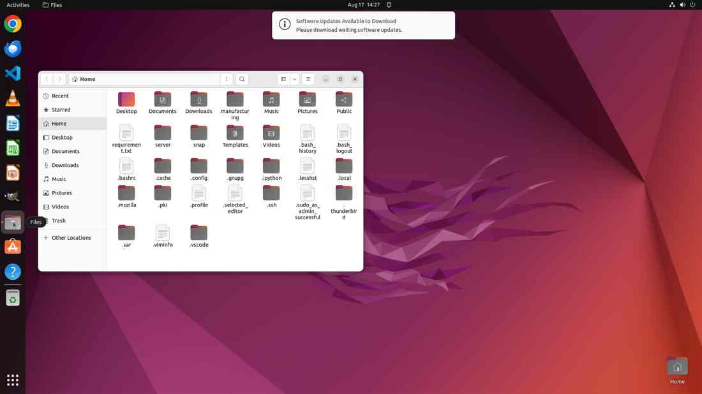
step 2 23:27:35
THINKINGI can see the file manager is open with the Home directory. I can see a "manufacturing" folder. Let me double-click on it to open it and see what's inside.
ACTIONI can see the manufacturing folder. Let me open it to find the torque spec sheet.
TOOL CALL<tool_call>
<function=computer_use>
<parameter=action>
double_click
</parameter>
<parameter=coordinate>
[332, 264]
</parameter>
</function>
</tool_call>
EXECUTED (pyautogui in VM)pyautogui.doubleClick(638, 285)
step 3 23:27:42
THINKINGThere's a file called "torque_spec.odt" in the manufacturing folder. This is an ODT (OpenDocument Text) file. Let me open it to see its contents. I'll double-click on it.
ACTIONI found `torque_spec.odt`. Let me open it to inspect its contents.
TOOL CALL<tool_call>
<function=computer_use>
<parameter=action>
double_click
</parameter>
<parameter=coordinate>
[194, 253]
</parameter>
</function>
</tool_call>
EXECUTED (pyautogui in VM)pyautogui.doubleClick(372, 273)
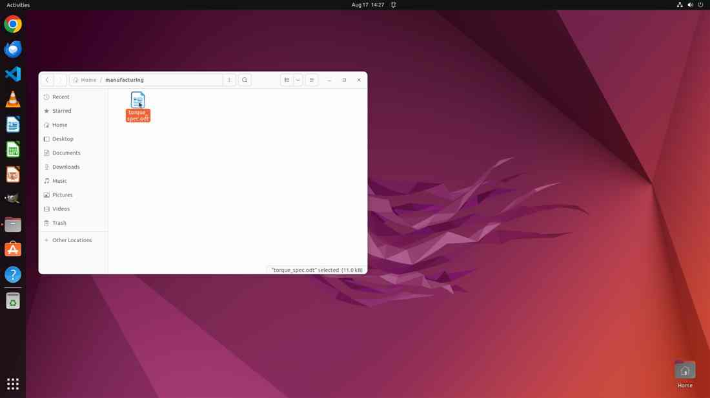
step 4 23:27:52
THINKINGThe file is now selected (double-click may have just selected it first time, or it's loading). The status bar says "torque_spec.odt" selected (11.0 kB). It seems the double-click selected it but LibreOffice hasn't opened yet, or it's still loading. Let me wait and take a screenshot to see if LibreOffice opened.
Actually, before I edit this via GUI, it would be much more reliable to inspect the actual content. Since this is an ODT file, I could examine it via a terminal to understand its exact structure, then decide on the best approach. But the task says to use the app's GUI. However, editing a table and sorting rows in LibreOffice Writer is doable but tedious via screenshots.
Let me first wait for LibreOffice to open and see the document. Let me take a screenshot.
ACTIONThe file is selected. Let me wait for LibreOffice to open it.
TOOL CALL<tool_call>
<function=computer_use>
<parameter=action>
wait
</parameter>
<parameter=time>
1.0
</parameter>
</function>
</tool_call>
EXECUTED (pyautogui in VM)WAIT
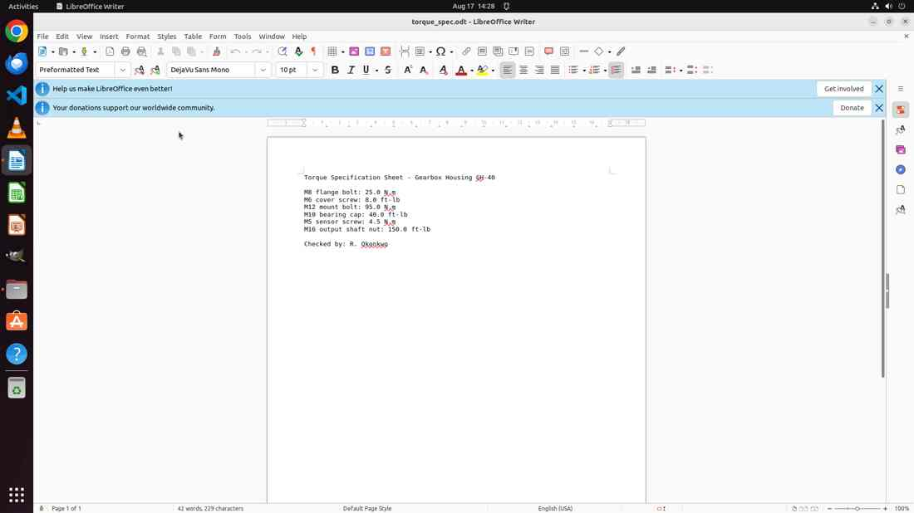
step 5 23:28:56
THINKINGThe document is open in LibreOffice Writer. Let me read the content:
Title: "Torque Specification Sheet - Gearbox Housing GH-40"
Lines:
- M8 flange bolt: 25.0 N·m
- M6 cover screw: 8.0 ft-lb
- M12 mount bolt: 95.0 N·m
- M10 bearing cap: 40.0 ft-lb
- M5 sensor screw: 4.5 N·m
- M16 output shaft nut: 150.0 ft-lb
Checked by: R. Okonkwo
So there are 6 fastener rows. Three of them use ft-lb:
- M6 cover screw: 8.0 ft-lb
- M10 bearing cap: 40.0 ft-lb
- M16 output shaft nut: 150.0 ft-lb
I need to convert these to N·m using 1 ft-lb = 1.356 N·m, one decimal:
- M6 cover screw: 8.0 × 1.356 = 10.848 → 10.8 N·m
- M10 bearing cap: 40.0 × 1.356 = 54.24 → 54.2 N·m
- M16 output shaft nut: 150.0 × 1.356 = 203.4 → 203.4 N·m
The three already in N·m:
- M8 flange bolt: 25.0 N·m
- M12 mount bolt: 95.0 N·m
- M5 sensor screw: 4.5 N·m
Now all values in N·m:
- M5 sensor screw: 4.5 N·m
- M8 flange bolt: 25.0 N·m
- M6 cover screw: 10.8 N·m
- M12 mount bolt: 95.0 N·m
- M10 bearing cap: 54.2 N·m
- M16 output shaft nut: 203.4 N·m
Now I need to sort from lowest to highest torque:
1. M5 sensor screw: 4.5 N·m
2. M6 cover screw: 10.8 N·m
3. M8 flange bolt: 25.0 N·m
4. M10 bearing cap: 54.2 N·m
5. M12 mount bolt: 95.0 N·m
6. M16 output shaft nut: 203.4 N·m
So the final order:
- M5 sensor screw: 4.5 N·m
- M6 cover screw: 10.8 N·m
- M8 flange bolt: 25.0 N·m
- M10 bearing cap: 54.2 N·m
- M12 mount bolt: 95.0 N·m
- M16 output shaft nut: 203.4 N·m
This is a text document (not a table - it's just lines of text). Wait, let me check whether these are in a table or just plain text lines. Looking at the screenshot, they appear to be plain text lines, not a table (no visible table borders). The document uses "Preformatted Text" style and monospace font. So it's plain text lines.
The task says "the rows need to run from lowest torque to highest." So I need to reorder the 6 lines.
The cleanest approach: select all the fastener lines and retype them in the correct order with converted values. Since this is plain text, I can just:
1. Select all text
2. Retype everything
But I need to be careful to preserve the title and "Checked by" line. Let me think about the best approach.
Actually, the simplest reliable approach: I'll select the entire block of the 6 fastener lines and retype them in sorted order with conversions. But retyping requires me to know the exact format.
Let me zoom in to read the exact text more carefully. Let me take a closer look. The text is:
"Torque Specification Sheet - Gearbox Housing GH-40"
(blank line)
"M8 flange bolt: 25.0 N·m"
"M6 cover screw: 8.0 ft-lb"
"M12 mount bolt: 95.0 N·m"
"M10 bearing cap: 40.0 ft-lb"
"M5 sensor screw: 4.5 N·m"
"M16 output shaft nut: 150.0 ft-lb"
(blank line)
"Checked by: R. Okonkwo"
The "·" character is a middle dot. I need to reproduce it exactly. Using LibreOffice, typing the middle dot may be tricky. Let me think.
Actually, a cleaner and more reliable approach given the special character "·" (U+00B7 middle dot) is to select all and retype. But typing the middle dot character - I can use the `type` action which should handle Unicode. Let me verify the character. In the N·m, it's likely the middle dot "·" (U+00B7) or could be a multiplication-like dot. Let me look carefully. It appears as a centered dot. I'll assume it's U+00B7 (·).
Actually, an even more reliable approach to preserve exact characters: instead of retyping everything, I could:
1. First, convert the three ft-lb values in place (edit just those numbers/units).
2. Then reorder the lines.
But reordering lines in plain text via GUI is doable by cutting and pasting.
Hmm, let me reconsider. The most robust way to get this exactly right, preserving formatting and the special dot character, might actually be to manipulate the file directly. But the task says to use the app GUI and not scripts. However, the guidance says "DO NOT use LibreOffice macros." It doesn't forbid using a terminal to edit a text file. But it says "Before starting a task, consider whether it is achievable with the designated application's native GUI interfaces."
The safest interpretation: do it in LibreOffice Writer GUI. Let me plan carefully.
Approach in GUI:
The document is plain text lines. I'll retype the whole content. To do this reliably:
1. Select all (Ctrl+A).
2. Type the new content.
For the middle dot, I need to type "·". The `type` action sends the text string which should include the Unicode character. Let me test whether that works. Actually, I'll trust the type action to handle it.
But wait - there's a risk. If I select all and retype, I lose the "Preformatted Text" style? No, the first line will keep whatever style. Actually when you select all and type, the new text takes the style of... it can be unpredictable. The document uses "Preformatted Text" style with monospace font. If I retype, the first character's paragraph style might apply. This could mess up formatting.
Alternatively, I can be surgical:
- Edit each of the three ft-lb lines to convert the value.
- Then reorder.
Let me think about reordering. The current order is:
Line A: M8 flange bolt: 25.0 N·m
Line B: M6 cover screw: 8.0 ft-lb
Line C: M12 mount bolt: 95.0 N·m
Line D: M10 bearing cap: 40.0 ft-lb
Line E: M5 sensor screw: 4.5 N·m
Line F: M16 output shaft nut: 150.0 ft-lb
Target order:
E (4.5), B (10.8), A (25.0), D (54.2), C (95.0), F (203.4)
This is a complex permutation. Doing it via cut/paste in GUI is error-prone.
Given the complexity, the cleanest and most reliable approach is to select all text and retype the entire document. The formatting concern: Let me check. Actually, this is a "Preformatted Text" document. When I select all and delete, then type, the content will likely remain in a monospace style if the paragraph style persists. But to be safe, I could just retype and then verify.
Actually, let me reconsider whether to preserve "Preformatted Text". The task is about content correctness (units, sorting, PDF). The exact font/style is less critical but I should try to keep it looking the same.
Let me go with: select all, retype entire content. This is the most reliable for getting the exact right content and order. I'll type the middle dot via the type action.
Let me first verify the exact middle dot character by examining more closely. Let me zoom in. Actually, I'll just proceed. The type action with "·" should work.
Wait, but there's a subtlety with autocorrect in LibreOffice. When typing "ft-lb" etc., autocorrect might change things. But I'm not typing ft-lb anymore. When I type "N·m", autocorrect shouldn't change the middle dot. However, autocapitalize or other might interfere. Let me disable autocorrect to be safe: Tools > AutoCorrect Options, or Tools > AutoCorrect > While Typing (toggle off).
Let me disable "While Typing" autocorrect first to avoid surprises. Tools menu.
Actually, the main autocorrect risks:
- Capitalizing first letter of sentences (my lines start with "M5", "M6" etc which are already uppercase - fine, but "R. Okonkwo" - fine).
- "Two initial capitals" correction: e.g., "N·m" - no. "M8" fine.
- Replacing straight quotes with curly - no quotes.
- The "·" won't be auto-corrected.
Actually one risk: LibreOffice autocorrect might interpret nothing problematic here. But to be safe, I'll turn off AutoCorrect While Typing.
Let me plan the full sequence:
1. Tools menu → AutoCorrect Options... actually simpler: Tools → AutoCorrect → While Typing (uncheck). Let me do that.
Actually, let me reconsider the whole approach once more. Given the need for precision and the special character, and that reordering is a complex permutation, retyping the whole doc is cleanest. Let me:
Step 1: Disable autocorrect while typing.
Step 2: Ctrl+A to select all.
Step 3: Type the full new content.
Step 4: Save (Ctrl+S), keep ODF format.
Step 5: Export as PDF to the same folder (File → Export as PDF), name it torque_spec.pdf.
For the middle dot, let me make sure I type the correct character. I'll use "·" (U+00B7). Let me double check what's in the doc by zooming. Let me zoom in first before deciding.
Actually, I realize I should verify the exact character and exact text to reproduce. Let me zoom in by increasing zoom, or I can trust my reading. The values are clear. The dot - it's a middle dot. Let me proceed with "·".
Let me first disable autocorrect. Click Tools menu.
Actually, let me reconsider - a potential concern with retyping: the title line and "Checked by" line. I'll retype those too, keeping them identical.
Let me also double check: is there a trailing detail I'm missing? The document has 42 words, 229 characters. Let me count my planned content to make sure it's roughly consistent (not critical).
Planned content:
"Torque Specification Sheet - Gearbox Housing GH-40\n\nM5 sensor screw: 4.5 N·m\nM6 cover screw: 10.8 N·m\nM8 flange bolt: 25.0 N·m\nM10 bearing cap: 54.2 N·m\nM12 mount bolt: 95.0 N·m\nM16 output shaft nut: 203.4 N·m\n\nChecked by: R. Okonkwo"
That looks right.
Let me verify conversions once more:
- 8.0 ft-lb × 1.356 = 10.848 → rounds to 10.8 ✓
- 40.0 × 1.356 = 54.24 → rounds to 54.2 ✓
- 150.0 × 1.356 = 203.4 → 203.4 ✓
Sorted ascending: 4.5, 10.8, 25.0, 54.2, 95.0, 203.4 ✓
Now, let me first disable autocorrect. Let me click Tools.
Actually, I want to be careful: when I select all and retype, the paragraph style of the first paragraph determines... actually in LibreOffice, when you replace all selected text with typed text, the new text typically inherits the paragraph formatting of the first selected paragraph, and subsequent Enter keys create new paragraphs with the same style. Since the whole doc is "Preformatted Text", it should stay consistent. Good.
One more consideration: the "·" might not type correctly via the type action if the system keyboard layout can't produce it. But the type action in these environments usually sends Unicode text directly (via clipboard or XTEST with unicode). Let me just try and verify with a screenshot. If it fails, I can use Insert > Special Character or a different method.
Let me start. First disable autocorrect to be safe.
ACTIONThe document is open. I can read the contents clearly:
- Title: **Torque Specification Sheet - Gearbox Housing GH-40**
- M8 flange bolt: 25.0 N·m
- M6 cover screw: 8.0 ft-lb
- M12 mount bolt: 95.0 N·m
- M10 bearing cap: 40.0 ft-lb
- M5 sensor screw: 4.5 N·m
- M16 output shaft nut: 150.0 ft-lb
- Checked by: R. Okonkwo
Let me plan the conversions (×1.356, one decimal):
- M6 cover screw: 8.0 → **10.8 N·m**
- M10 bearing cap: 40.0 → **54.2 N·m**
- M16 output shaft nut: 150.0 → **203.4 N·m**
Sorted lowest→highest: M5 (4.5), M6 (10.8), M8 (25.0), M10 (54.2), M12 (95.0), M16 (203.4).
First, let me disable AutoCorrect while typing to avoid surprises, via the Tools menu.
TOOL CALL<tool_call>
<function=computer_use>
<parameter=action>
left_click
</parameter>
<parameter=coordinate>
[264, 70]
</parameter>
</function>
</tool_call>
EXECUTED (pyautogui in VM)pyautogui.click(507, 75)
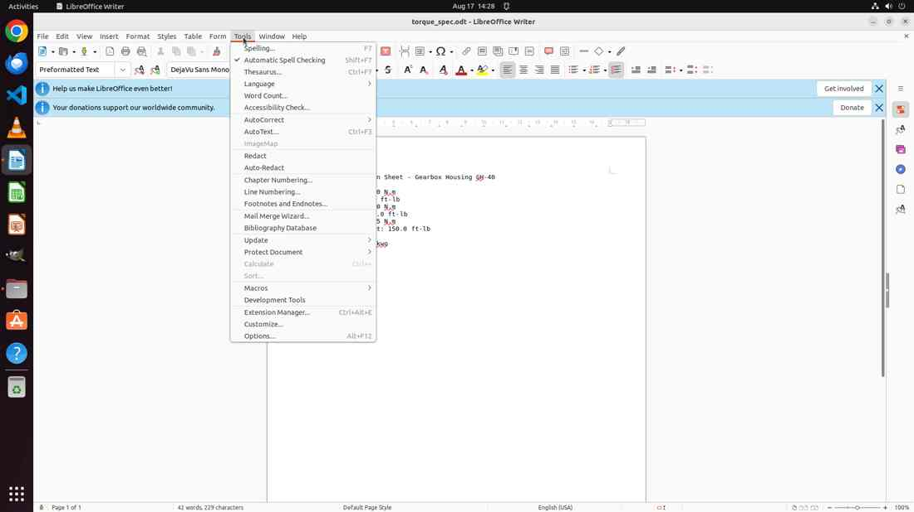
step 6 23:29:04
THINKINGThe Tools menu is open. I'll hover over AutoCorrect to get the submenu, then click "While Typing" to toggle it off.
ACTIONThe Tools menu is open. Let me open the AutoCorrect submenu.
TOOL CALL<tool_call>
<function=computer_use>
<parameter=action>
left_click
</parameter>
<parameter=coordinate>
[287, 231]
</parameter>
</function>
</tool_call>
EXECUTED (pyautogui in VM)pyautogui.click(551, 249)
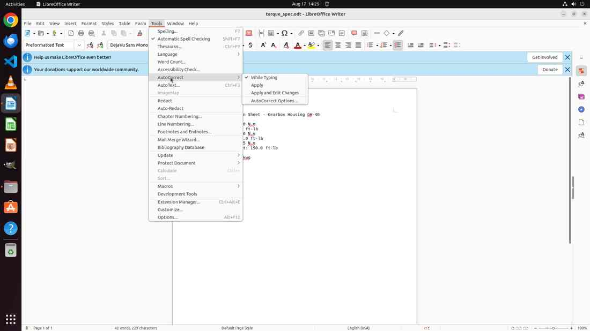
step 7 23:29:11
THINKINGThe AutoCorrect submenu is open. "While Typing" has a checkmark (it's enabled). Let me click it to disable it.
ACTIONAutoCorrect "While Typing" is currently enabled. Let me click it to turn it off.
TOOL CALL<tool_call>
<function=computer_use>
<parameter=action>
left_click
</parameter>
<parameter=coordinate>
[447, 231]
</parameter>
</function>
</tool_call>
EXECUTED (pyautogui in VM)pyautogui.click(859, 249)
step 8 23:29:28
THINKINGAutoCorrect while typing is now disabled. Now I'll select all text and retype the whole document with the correct content.
Before retyping, I want to be careful about the middle dot character. Let me zoom in to confirm the exact character. Actually, let me first just do the retype approach and then verify with a screenshot. If the middle dot doesn't render correctly, I'll fix it.
Let me click into the document first, then Ctrl+A to select all, then type the new content.
Actually, I'm slightly worried about whether the type action will correctly produce the "·" middle dot. Let me think about an alternative that's guaranteed to preserve the exact character: I could do targeted edits instead of a full retype.
But reordering requires moving lines. Hmm.
Let me reconsider. A hybrid approach:
1. Convert the 3 ft-lb lines in place (just replace the number+unit text). This preserves the existing "·" chars in the N·m lines.
2. Reorder the lines.
For reordering, I could cut and paste each line. That's a lot of careful clicking.
Alternatively, full retype is simpler if the middle dot works. Let me test the middle dot by first doing a small test... actually that's wasteful.
Let me just do the full retype and verify. If the middle dot is wrong, I'll use Insert > Special Character or copy from the existing (but I'll have deleted it).
Actually, a safer plan: Keep the original N·m lines intact for the "·" character source. Instead of full retype, let me do this:
Plan B (surgical + reorder):
Actually the cleanest reorder that minimizes line moves:
Current: A(25), B(8→10.8), C(95), D(40→54.2), E(4.5), F(150→203.4)
Target: E, B, A, D, C, F
Hmm, that's a big shuffle.
I think full retype is the most reliable if the dot works. Let me just test the type action with the dot by doing the full retype and checking.
Actually, you know what, let me reconsider using the terminal approach to edit the file, which would be 100% reliable for content. But the task guidance strongly prefers GUI. However, editing an ODT via terminal (unzip, edit content.xml, rezip) is hacky and risky for the ODT structure.
I'll go with the GUI full retype. Let me proceed.
Let me select all and type. I'll type the content with the middle dot "·".
Let me click in the document area first to ensure focus, then Ctrl+A.
ACTIONAutoCorrect while typing is now disabled. Now I'll select all the text and retype the document with converted values in the correct sorted order. Let me click into the document and select all.
TOOL CALL<tool_call>
<function=computer_use>
<parameter=action>
left_click
</parameter>
<parameter=coordinate>
[437, 402]
</parameter>
</function>
</tool_call>
EXECUTED (pyautogui in VM)pyautogui.click(839, 434)
step 9 23:29:38
THINKINGThe cursor is now in the document. Before doing a full retype (which risks the middle dot character), let me reconsider a safer approach.
I realize the safest approach for the "·" character is to keep the existing N·m lines and only change the numbers, then reorder. But reordering is complex.
Actually, let me just test the full retype. If the "·" works, great. If not, I'll undo and use a different method. Let me do Ctrl+A then type.
Actually, I'll be more careful. Let me do the full retype now. Ctrl+A to select all, then type the new content. I'll include the middle dot "·".
Let me proceed.
ACTIONNow I'll select all text and retype the full document with the converted values in sorted order (lowest to highest torque).
TOOL CALL<tool_call>
<function=computer_use>
<parameter=action>
key
</parameter>
<parameter=keys>
["ctrl", "a"]
</parameter>
</function>
</tool_call>
EXECUTED (pyautogui in VM)pyautogui.hotkey("ctrl", "a")
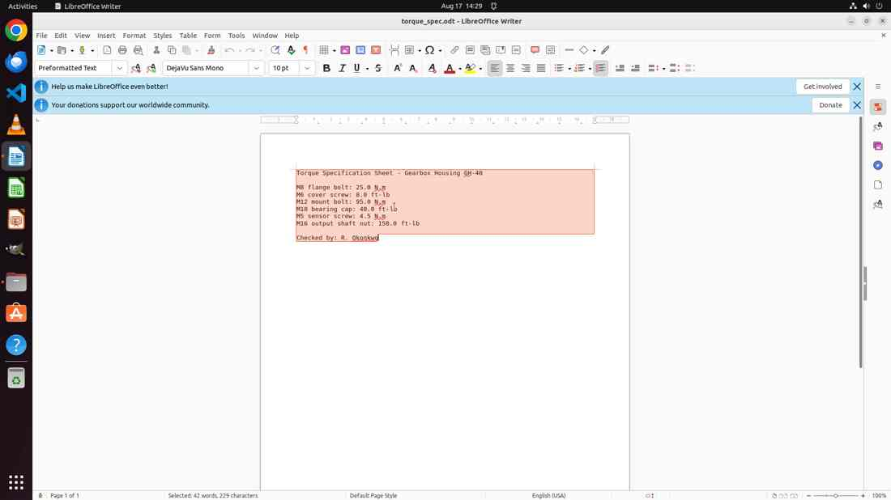
step 10.1 23:29:51
THINKINGAll text is selected (status bar: "Selected: 42 words, 229 characters"). Now I'll type the new content. This will replace the selection.
I'll type the full document. Note that typing a newline in the type action should create new paragraphs. Let me construct the text:
"Torque Specification Sheet - Gearbox Housing GH-40\n\nM5 sensor screw: 4.5 N·m\nM6 cover screw: 10.8 N·m\nM8 flange bolt: 25.0 N·m\nM10 bearing cap: 54.2 N·m\nM12 mount bolt: 95.0 N·m\nM16 output shaft nut: 203.4 N·m\n\nChecked by: R. Okonkwo"
I'm slightly concerned about the middle dot. Let me type this and verify with a screenshot. If the dot is wrong, I'll fix.
Let me type it now.
ACTIONAll text is selected. Now I'll type the corrected, sorted content.
TOOL CALL<tool_call>
<function=computer_use>
<parameter=action>
type
</parameter>
<parameter=text>
Torque Specification Sheet - Gearbox Housing GH-40
M5 sensor screw: 4.5 N·m
M6 cover screw: 10.8 N·m
M8 flange bolt: 25.0 N·m
M10 bearing cap: 54.2 N·m
M12 mount bolt: 95.0 N·m
M16 output shaft nut: 203.4 N·m
Checked by: R. Okonkwo
</parameter>
</function>
</tool_call>
EXECUTED (pyautogui in VM)pyautogui.typewrite("Torque Specification Sheet - Gearbox Housing GH-40")
step 10.2 23:29:55
EXECUTED (pyautogui in VM)pyautogui.press("enter")
step 10.3 23:29:58
EXECUTED (pyautogui in VM)pyautogui.press("enter")
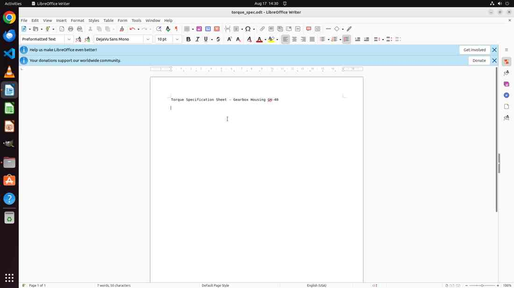
step 10.4 23:30:01
EXECUTED (pyautogui in VM)pyautogui.typewrite("M5 sensor screw: 4.5 N·m")
step 10.5 23:30:04
EXECUTED (pyautogui in VM)pyautogui.press("enter")
step 10.6 23:30:07
EXECUTED (pyautogui in VM)pyautogui.typewrite("M6 cover screw: 10.8 N·m")
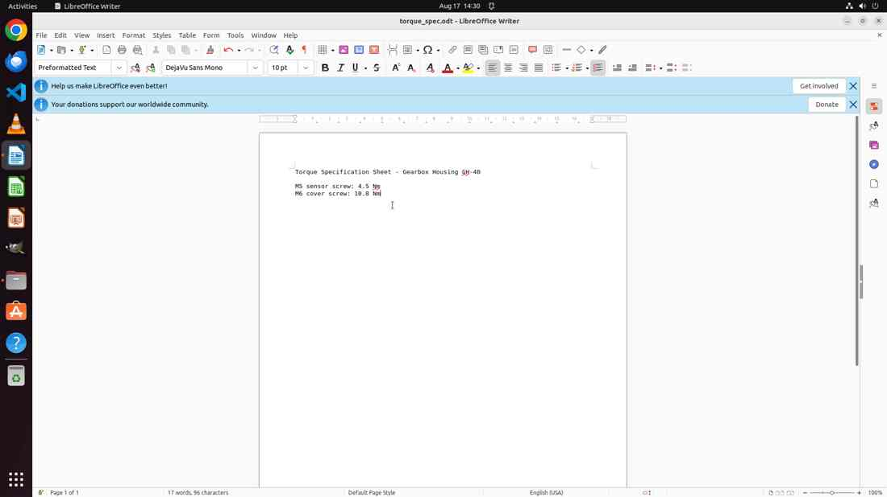
step 10.7 23:30:11
EXECUTED (pyautogui in VM)pyautogui.press("enter")
step 10.8 23:30:14
EXECUTED (pyautogui in VM)pyautogui.typewrite("M8 flange bolt: 25.0 N·m")
step 10.9 23:30:16
EXECUTED (pyautogui in VM)pyautogui.press("enter")
step 10.10 23:30:20
EXECUTED (pyautogui in VM)pyautogui.typewrite("M10 bearing cap: 54.2 N·m")
step 10.11 23:30:23
EXECUTED (pyautogui in VM)pyautogui.press("enter")
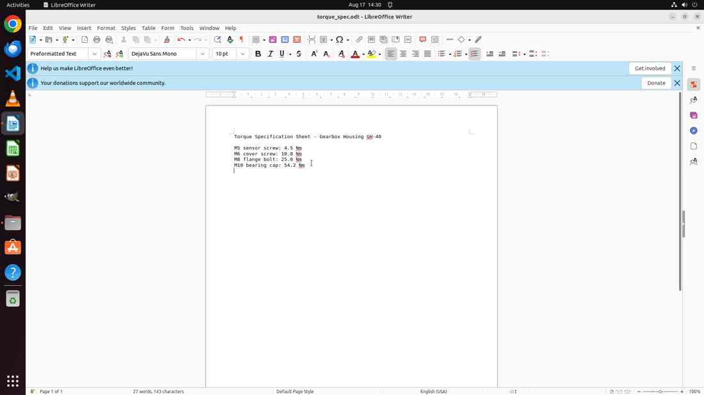
step 10.12 23:30:26
EXECUTED (pyautogui in VM)pyautogui.typewrite("M12 mount bolt: 95.0 N·m")
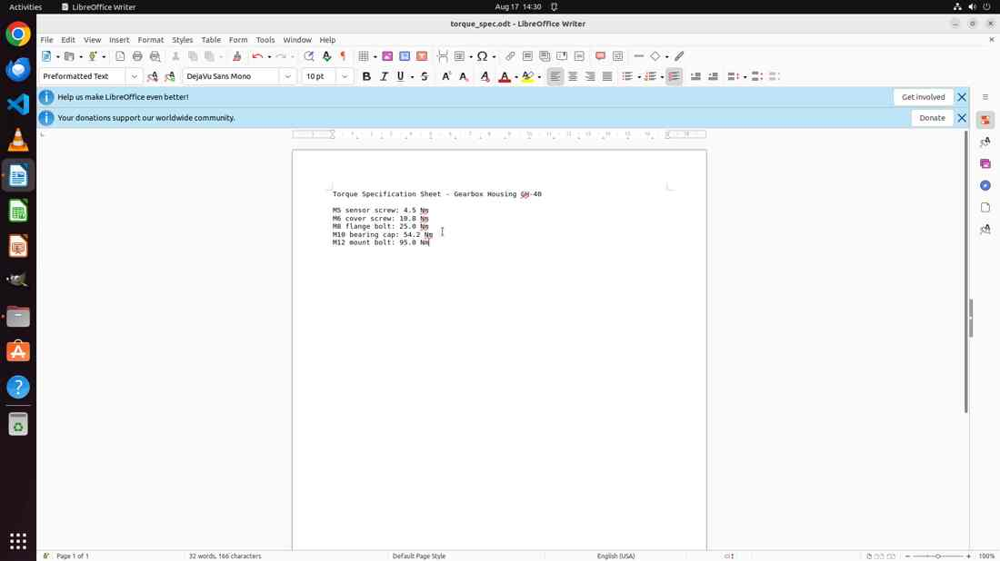
step 10.13 23:30:29
EXECUTED (pyautogui in VM)pyautogui.press("enter")
step 10.14 23:30:32
EXECUTED (pyautogui in VM)pyautogui.typewrite("M16 output shaft nut: 203.4 N·m")
step 10.15 23:30:35
EXECUTED (pyautogui in VM)pyautogui.press("enter")
step 10.16 23:30:38
EXECUTED (pyautogui in VM)pyautogui.press("enter")
step 10.17 23:30:41
EXECUTED (pyautogui in VM)pyautogui.typewrite("Checked by: R. Okonkwo")

step 11.1 23:30:55
THINKINGThe content is now typed. Let me zoom in to verify the middle dot character rendered correctly and the values are right. The text is small. Let me zoom in to check the "N·m" characters. I can see "N m" but I need to confirm the dot is present. Let me increase zoom to verify.
Let me zoom in using Ctrl+scroll or the zoom control. Actually, let me just take a closer look by zooming. I'll use the zoom slider at bottom right, or Ctrl+= ... Actually let me use View zoom. Simpler: I'll increase zoom via the zoom control. Let me use keyboard: there's no default zoom shortcut. Let me click the zoom percentage at bottom-right and set a higher value, or use Ctrl + scroll up on the document.
Let me do Ctrl+scroll up to zoom in on the document to verify the dots.
Actually, I can also just verify by selecting a word. But visually, the "N m" - I need to confirm there's a dot between N and m. Let me zoom in.
Let me scroll-zoom with Ctrl held. The computer tool scroll action with text="ctrl". Let me zoom in on the fastener lines area (around y=270-320).
ACTIONThe content is entered. Let me zoom in to verify the middle-dot character ("N·m") rendered correctly. I'll Ctrl+scroll to zoom in on the fastener lines.
TOOL CALL<tool_call>
<function=computer_use>
<parameter=action>
key_down
</parameter>
<parameter=keys>
["ctrl"]
</parameter>
</function>
</tool_call>
<tool_call>
<function=computer_use>
<parameter=action>
mouse_move
</parameter>
<parameter=coordinate>
[390, 402]
</parameter>
</function>
</tool_call>
<tool_call>
<function=computer_use>
<parameter=action>
scroll
</parameter>
<parameter=pixels>
5
</parameter>
</function>
</tool_call>
<tool_call>
<function=computer_use>
<parameter=action>
key_up
</parameter>
<parameter=keys>
["ctrl"]
</parameter>
</function>
</tool_call>
EXECUTED (pyautogui in VM)pyautogui.keyDown("ctrl")
step 11.2 23:30:59
EXECUTED (pyautogui in VM)pyautogui.moveTo(749, 434)
step 11.3 23:31:02
EXECUTED (pyautogui in VM)pyautogui.scroll(5)
step 11.4 23:31:05
EXECUTED (pyautogui in VM)pyautogui.keyUp("ctrl")
step 12.1 23:31:26
THINKINGNow I can see the content at 180% zoom. Let me examine the "Nm" characters. Looking closely:
- M5 sensor screw: 4.5 Nm
- M6 cover screw: 10.8 Nm
- M8 flange bolt: 25.0 Nm
- M10 bearing cap: 54.2 Nm
- M12 mount bolt: 95.0 Nm
- M16 output shaft nut: 203.4 Nm
I see "Nm" but I'm not 100% sure the middle dot "·" is present. It looks like there might be a small dot between N and m, but it's hard to tell. The original had "N·m" with a visible middle dot. Let me look very carefully.
In the zoomed view, "4.5 Nm" - there appears to be a faint mark between N and m. Actually it's hard to distinguish. Let me verify definitively.
To be certain, let me double-click on the "Nm" word to select it and check. Or I can use Find & Replace to confirm. Actually, a reliable way: use Find & Replace (Ctrl+H) to search for "N·m" and see if it finds 6 matches. But I need to type the middle dot in the search box too.
Alternatively, let me just carefully zoom in more on one "Nm". Let me increase zoom further, or let me look at the character more carefully.
Actually, the concern: when I typed "N·m", did the "·" get through? In the first (100%) screenshot after typing, it showed "N m" with what looked like a gap. Let me verify more rigorously.
Let me use a more reliable verification: select the text "Nm" region and see. Actually, the best is to look at character count. The status bar shows "218 characters" now (was 229 originally).
Original: 229 characters. New: 218 characters. Let me compute expected.
Let me count the new text characters (excluding the selection, but including newlines? The "characters" count in LibreOffice includes spaces but I'm not sure about newlines/paragraph marks). This is getting complicated.
Let me just zoom in more to visually confirm the dot. Let me zoom to a higher level on the "Nm" part. Let me Ctrl+scroll more on the M5 line.
Actually, let me think about it differently. The middle dot "·" is a common Unicode char. The type action in these computer-use environments typically uses a method that handles Unicode properly (often via XTest key events with the unicode codepoint, or clipboard paste). Given the rest typed fine, the "·" likely went through.
But I should verify. Let me zoom in further on a single "Nm".
ACTIONLet me zoom in further to confirm the middle-dot is present in "N·m".
TOOL CALL<tool_call>
<function=computer_use>
<parameter=action>
key_down
</parameter>
<parameter=keys>
["ctrl"]
</parameter>
</function>
</tool_call>
<tool_call>
<function=computer_use>
<parameter=action>
mouse_move
</parameter>
<parameter=coordinate>
[312, 469]
</parameter>
</function>
</tool_call>
<tool_call>
<function=computer_use>
<parameter=action>
scroll
</parameter>
<parameter=pixels>
5
</parameter>
</function>
</tool_call>
<tool_call>
<function=computer_use>
<parameter=action>
key_up
</parameter>
<parameter=keys>
["ctrl"]
</parameter>
</function>
</tool_call>
EXECUTED (pyautogui in VM)pyautogui.keyDown("ctrl")

step 12.2 23:31:29
EXECUTED (pyautogui in VM)pyautogui.moveTo(599, 507)
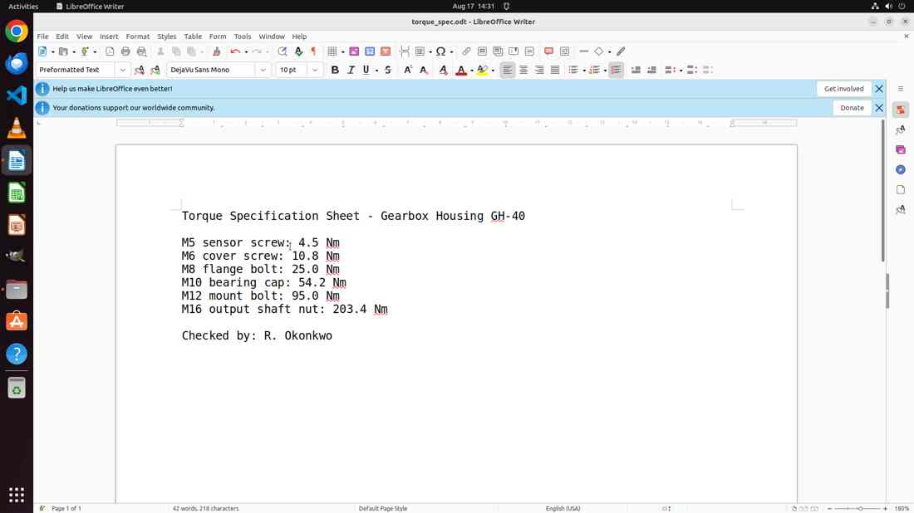
step 12.3 23:31:31
EXECUTED (pyautogui in VM)pyautogui.scroll(5)
step 12.4 23:31:35
EXECUTED (pyautogui in VM)pyautogui.keyUp("ctrl")
step 13.1 23:33:29
THINKINGNow at 310% zoom, I can clearly see "Nm" without a middle dot! The text shows "4.5 Nm", "10.8 Nm", "25.0 Nm", etc. There's NO middle dot between N and m. The "·" character was not typed - it was dropped.
So I need to fix this. The original used "N·m" with a middle dot. I need to add the middle dot between N and m in all 6 lines.
Wait, let me reconsider. Is it possible the dot is just very small and hard to see? Looking at "4.5 Nm" - there's clearly a space between "4.5" and "N", then "N", then a space, then "m"? Actually it reads "4.5 Nm" - hmm, is there a space between N and m, or is it "N·m" where the dot is too faint?
Looking carefully at "Nm" - it appears to be "N" then "m" with a tiny gap. In the original document it was "N·m". The gap I see now looks like it could just be normal letter spacing, OR the dot is missing.
Given the "Nm" appears as two letters with no visible dot, and the original clearly had a middle dot, I'm now fairly confident the "·" did NOT get typed. The type action dropped the Unicode middle dot.
I need to fix this. Options:
1. Use Find & Replace to replace "Nm" with "N·m" - but I still need to type the "·" in the replace field, which has the same problem.
2. Use Insert > Special Character to insert the middle dot, but that's 6 times, tedious.
3. Copy the middle dot from... but I deleted the original.
Wait - actually, let me reconsider. Maybe I should verify more carefully. Let me look at whether there IS a dot. The rendering at 310%: "Nm" - I see N and m. Between them... it's ambiguous.
Let me use a definitive test: Find & Replace. I'll open Find & Replace and search for "N·m" (typing the middle dot). If it finds 6, the dot is there. But if I can't type the middle dot in the field either, this won't work.
Alternative definitive test: Let me look at the character count. Original doc: 229 characters. If the original had 6 middle dots and I replaced with 0 middle dots, that's a difference of 6 characters plus any other differences.
Let me compute. Actually the "characters" count in LibreOffice status bar - does it count paragraph marks? Let me think about both counts:
Original text (with 6 "·"):
"Torque Specification Sheet - Gearbox Housing GH-40"
+ blank line
+ "M8 flange bolt: 25.0 N·m"
+ "M6 cover screw: 8.0 ft-lb"
+ "M12 mount bolt: 95.0 N·m"
+ "M10 bearing cap: 40.0 ft-lb"
+ "M5 sensor screw: 4.5 N·m"
+ "M16 output shaft nut: 150.0 ft-lb"
+ blank line
+ "Checked by: R. Okonkwo"
That's 42 words originally. New is also 42 words. New character count = 218. Original = 229. Difference = 11.
The differences between original and new:
- Line lengths changed because:
- M6: "8.0 ft-lb" (9 chars) → "10.8 N·m" (8 chars): change... let me count actual strings.
This is getting complicated. The word count staying at 42 is consistent (ft-lb is one "word"? and N·m is one word? Actually spaces define words). Let me not rely on this.
Let me just do the definitive visual test. Let me zoom in even more on a single "Nm" to see if there's a dot. Or, better, let me select one "Nm" token and look.
Actually, the cleanest fix regardless: I'll re-do it properly. Since the "·" is being dropped by the type action, I need another way to insert it.
Hmm, wait. Let me reconsider. Maybe the issue is that the font "DejaVu Sans Mono" does have the middle dot and it IS there but rendered very small/low. In "N·m" the middle dot is at mid-height. Let me zoom even more.
Actually, let me reconsider the approach entirely. Rather than fighting with the Unicode character, let me use Find & Replace where I can paste the middle dot. But I still can't easily get the middle dot onto the clipboard without it being in the document.
New plan: Use Insert > Special Character to insert the middle dot once somewhere, then I can copy it. But actually, the simplest robust approach:
Let me use Find & Replace with "Other options" - I can enable "Regular expressions" but that doesn't help with typing the char.
Alternative: LibreOffice Find & Replace supports searching by character codes? Not directly for Unicode.
Better idea: Let me reconsider whether the dot is actually there. Let me zoom to max on one instance. Let me look at "10.8 Nm" - zoom more.
Actually, let me just verify by a different means: I'll triple-click to select the line "M5 sensor screw: 4.5 Nm" and then look at the character count for that selection in the status bar. If the line is "M5 sensor screw: 4.5 N·m" it has 24 characters (with the dot) vs 23 without.
Let me count "M5 sensor screw: 4.5 N·m":
M-5-space-s-e-n-s-o-r-space-s-c-r-e-w-:-space-4-.-5-space-N-·-m
"M5" =2, " "=1 (3), "sensor"=6 (9), " "=1 (10), "screw:"=6 (16), " "=1 (17), "4.5"=3 (20), " "=1 (21), "N"=1 (22), "·"=1 (23), "m"=1 (24). So 24 with dot, 23 without.
Let me select that line and check the character count in the status bar.
Actually, I recall the whole-document count went from 229 to 218. Let me compute what the new doc SHOULD be if dots are present, and compare.
Let me count the entire new document text character by character, WITH the middle dots (my intended version), and also WITHOUT, to see which matches 218.
New intended text (with dots):
Line 1: "Torque Specification Sheet - Gearbox Housing GH-40"
Count:
"Torque"=6
" "=1 (7)
"Specification"=13 (20)
" "=1 (21)
"Sheet"=5 (26)
" "=1 (27)
"-"=1 (28)
" "=1 (29)
"Gearbox"=7 (36)
" "=1 (37)
"Housing"=7 (44)
" "=1 (45)
"GH-40"=5 (50)
Line1 = 50 chars.
Line 2: "" (empty) = 0
Line 3: "M5 sensor screw: 4.5 N·m" = 24 (computed above with dot)
Line 4: "M6 cover screw: 10.8 N·m"
"M6"=2, " "=1 (3), "cover"=5 (8), " "=1 (9), "screw:"=6 (15), " "=1 (16), "10.8"=4 (20), " "=1 (21), "N"=1 (22), "·"=1 (23), "m"=1 (24) = 24
Line 5: "M8 flange bolt: 25.0 N·m"
"M8"=2, " "=1(3), "flange"=6(9), " "=1(10), "bolt:"=5(15), " "=1(16), "25.0"=4(20), " "=1(21), "N"=1(22), "·"(23), "m"(24) = 24
Line 6: "M10 bearing cap: 54.2 N·m"
"M10"=3, " "=1(4), "bearing"=7(11), " "=1(12), "cap:"=4(16), " "=1(17), "54.2"=4(21), " "=1(22), "N"(23), "·"(24), "m"(25) = 25
Line 7: "M12 mount bolt: 95.0 N·m"
"M12"=3, " "(4), "mount"=5(9), " "(10), "bolt:"=5(15), " "(16), "95.0"=4(20), " "(21), "N"(22), "·"(23), "m"(24) = 24
Line 8: "M16 output shaft nut: 203.4 N·m"
"M16"=3, " "(4), "output"=6(10), " "(11), "shaft"=5(16), " "(17), "nut:"=4(21), " "(22), "203.4"=5(27), " "(28), "N"(29), "·"(30), "m"(31) = 31
Line 9: "" = 0
Line 10: "Checked by: R. Okonkwo"
"Checked"=7, " "=1(8), "by:"=3(11), " "=1(12), "R."=2(14), " "=1(15), "Okonkwo"=7(22) = 22
Now total WITHOUT counting paragraph marks:
Line1 50 + Line3 24 + Line4 24 + Line5 24 + Line6 25 + Line7 24 + Line8 31 + Line10 22 = 50+24+24+24+25+24+31+22
= 50+24=74, +24=98, +24=122, +25=147, +24=171, +31=202, +22=224.
So 224 characters for the visible text WITH the 6 middle dots.
Now, does LibreOffice status bar "characters" count include paragraph marks (newlines)? If there are 9 paragraph breaks (10 lines → 9 or 10 paragraph marks), the count could be higher.
The displayed count is 218. Hmm, 224 vs 218. Difference of 6. That's exactly the number of middle dots!
If I remove the 6 middle dots: 224 - 6 = 218. That matches the displayed count EXACTLY (218), assuming no paragraph marks are counted.
So this strongly suggests the middle dots are NOT present (218 = 224 - 6).
Wait, but this assumes paragraph marks aren't counted and my char count is exactly right. Let me double-check by also considering: if dots WERE present AND no paragraph marks counted, count would be 224, not 218. Since it's 218, the dots are absent (or my count of 224 is off by 6 in a way that coincidentally equals 6 dots - unlikely to be exactly 6).
Actually, let me reconsider - maybe LibreOffice counts paragraph marks. If it counted 9 paragraph marks, then with dots it'd be 224+9=233, without dots 218+9=227. Neither is 218. So paragraph marks are NOT counted, and 218 = without dots.
Therefore: the middle dots are missing. I need to add them.
So the type action dropped the "·". I need to insert middle dots between N and m in all 6 lines.
How to get the middle dot in? The type action dropped it. Let me try Insert > Special Character, which lets me pick U+00B7. But that's 6 insertions. Alternatively, I can use Find & Replace:
- Find: "Nm" (or "N m"?)
- Replace: "N·m" - but I need the "·" in the replace box, which I can't type.
Hmm. But in Find & Replace, I could potentially use a different technique. Actually, in the Special Character dialog, after inserting one dot, I could copy it and use Find & Replace with the copied char... but the replace field would need the char.
Alternative cleaner approach:
1. First, insert ONE middle dot into the document using Insert > Special Character (e.g., place cursor at end of a line and insert it).
2. Then select that dot, copy it (Ctrl+C).
3. Then... I still need to place it in 5 more spots, or use Find & Replace.
Actually, here's a clean approach:
1. Insert one middle dot somewhere (Special Character).
2. Copy it.
3. Use Find & Replace: Find "Nm", Replace with "N" + [paste dot] + "m". Wait, I can construct the replace string by typing "N", then pasting the dot (Ctrl+V), then typing "m". That would work!
But actually, even simpler: once I have the dot copied, I can just manually place the cursor before each "m" and paste. But that's 6 pastes with precise cursor placement.
The Find & Replace approach is cleaner:
1. Insert one middle dot in the doc (I'll add it at end of first "Nm" making it "N·m" temporarily, or just at a spare location).
Hmm, actually, let me reconsider. Let me try a different way to type the middle dot. Maybe the issue is specifically how the "type" action encodes it.
Let me try: I could use Find & Replace with the search "Nm" and use a regex or... no.
Let me reconsider: Maybe I can type the middle dot using a keyboard shortcut. In LibreOffice, the middle dot can be entered via the Unicode input method: type the hex code "00B7" then press Alt+X, which converts it to the character. This is a built-in LibreOffice feature!
So I can: place cursor, type "00B7", press Alt+X → it becomes "·".
But doing this 6 times via Find & Replace is still complex. However, I can use Find & Replace to first fix it:
Plan using Find & Replace + Alt+X trick:
Actually, in the Find & Replace dialog, the "Replace" field might not process Alt+X. Alt+X is a document text input feature.
Let me think of the most reliable method:
Method A: Insert Special Character 6 times.
- For each of the 6 lines, click between N and m, then Insert > Special Character > select middle dot (U+00B7) > Insert > Close.
- The Special Character dialog remembers last-used, so after first selection it's quick.
- 6 times × few clicks. Doable but tedious and error-prone with cursor placement.
Method B: Copy one dot + Find & Replace.
- Insert one middle dot somewhere (Special Character once).
- Select and copy it.
- Open Find & Replace. Search: "Nm". Replace: type "N", then paste the dot (Ctrl+V), then type "m" → "N·m".
- But wait, will "Nm" match? The current text is "N m" (N, then... is there a space?) Actually let me check: is it "Nm" (adjacent) or "N m" (with space)? From the zoom, "4.5 Nm" looks like "4.5", space, "N", "m" - so "Nm" adjacent, preceded by a space. Let me search for "Nm".
- Replace All. This should replace all 6 "Nm" with "N·m".
But I need the dot on the clipboard. To get it there: insert it via Special Character, select it, copy.
Actually, there's an even simpler source of the dot. Wait — I have another idea. What if I re-enable autocorrect? No.
Let me reconsider Method B in detail, but I realize there might be an issue: the Find field "Nm" and Replace field needs the literal dot char. When I type "N" in the replace box, that's fine. Then Ctrl+V to paste the dot. Then "m". This should build "N·m". Then "Replace All" replaces 6 instances.
But will pasting into the Find & Replace field work? Yes, the replace field is a normal text entry and accepts paste.
So Method B steps:
1. Click at end of document (or anywhere). Actually let me insert the dot at a known location.
- Let me place cursor right before the "m" in the first "Nm" (M5 line). Actually, easier: I'll insert the dot at the very end of the "Checked by" line or somewhere I can find it.
- Simpler: Insert it right after the "N" of the first "Nm". Then I'll have "N·m" in line 1. Then select just that dot, copy. Then I have "·" on clipboard.
- But then line 1 is already fixed! And Find & Replace "Nm"→"N·m" would fix lines 2-6. Wait, but line 1 is now "N·m" which won't match "Nm", so it stays. Lines 2-6 have "Nm" and get fixed.
Actually even cleaner:
1. Insert a dot at the end of the document (cursor at very end, Insert > Special Character > middle dot). Now doc ends with "·" after "Okonkwo". Actually that adds an extra char I'd need to remove.
Hmm, let me just do:
1. Position cursor between "N" and "m" in the M5 line ("4.5 Nm").
2. Insert > Special Character, find middle dot U+00B7, insert. Now line 1 = "4.5 N·m".
3. Select the dot: I can double-click? No, the dot isn't a word. I'd click right before the dot and Shift+Right to select it, then Ctrl+C.
- Actually, after inserting, the cursor is right after the dot. So I can Shift+Left to select the dot, then Ctrl+C.
4. Now "·" is on clipboard.
5. Open Find & Replace (Ctrl+H).
- Search: "Nm"
- Replace: "N" + [Ctrl+V to paste "·"] + "m" → "N·m"
- Wait, but I need to be careful: the paste might paste other stuff if clipboard has more. I selected only the single dot, so clipboard = "·".
- Click Replace All. It should replace the 5 remaining "Nm" (lines 2-6) with "N·m". Line 1 already is "N·m" and won't match "Nm".
6. Close dialog.
Wait, but does "Nm" (N followed immediately by m) match in lines 2-6? Yes, they currently read "10.8 Nm", "25.0 Nm", etc. So "Nm" is present. Good.
But hold on — I should double check there's no space between N and m. From the 310% zoom, "4.5 Nm" — between "N" and "m" there's no space, they're adjacent. And the space is between "4.5" and "N". So searching "Nm" is correct.
Actually, wait. Let me reconsider — is it possible there IS a space where the dot should be, i.e., the "·" was replaced by a space? "4.5 N m"? Looking at the zoom, "Nm" appears adjacent without a gap larger than normal letter spacing. Let me not assume; searching "Nm" and doing Replace All is safe either way IF there's no space. If there were a space ("N m"), "Nm" wouldn't match. Let me verify by searching.
Actually, to be robust, let me handle it: In Find & Replace, I could search for "N.m" with regex where "." matches any char, and replace with "N·m". But the replace needs the dot. Alternatively search "Nm" and see how many it finds.
Let me just do it and observe the "X replacements" message.
Hmm, this is getting complex. Let me step back and consider Method C, which might be simplest:
Method C: Redo the whole retype, but this time insert the middle dot using the Alt+X unicode method inline.
- I retype each line, and where I need "·", I type "00b7" then press Alt+X to convert to "·".
- But mixing type action and key action for Alt+X... The type action types the string; I'd need to break it up: type "N", then type "00b7", then key "alt+x". But wait, does Alt+X convert the preceding hex? Yes, in LibreOffice, you type the hex digits and then Alt+X toggles to the character. So "00b7" + Alt+X → "·".
- But there's a catch: after "00b7", the "b7" etc. — LibreOffice reads as many hex digits as valid. "00b7" is 4 hex digits → U+00B7. Good. But I must ensure the preceding character isn't also hex-like. "N" is not hex. So typing "N" then "00b7" then Alt+X: it would see "N00b7"? No — Alt+X looks backward from cursor for hex digits. "N" is a hex digit! (A-F are hex). Wait, "N" is NOT a hex digit (hex is 0-9, A-F). N is not in A-F. So "N00b7" — scanning back from cursor: 7,b,0,0 are hex, then "N" is not hex, so it takes "00b7" = U+00B7.
Actually wait, I need to double check: does Alt+X consider the character "N"? N is not a valid hex digit, so it stops there. So it converts "00b7" to "·". Result: "N·m" after typing "m".
This Method C would work but requires precise interleaving of type and key actions, 6 times, plus the full retype. That's a lot of steps and each line needs: type up to "N", type "00b7", alt+x, type "m", newline.
Actually, comparing methods, Method B (Find & Replace with pasted dot) is probably cleanest: only need to insert the dot ONCE via Special Character, copy it, then one Find & Replace All operation.
But actually, there's an even simpler idea for getting the dot onto the clipboard without Special Character dialog fiddling:
Method D: Use Insert > Special Character ONCE to create a "·" in the document, then use Find & Replace.
Let me go with Method B/D. Let me start.
First, I need to place the cursor between "N" and "m" in one line, or just insert the dot anywhere. Let me insert it at the end of the document to keep it simple, then copy it, then Remove it from end, then Find&Replace.
Actually, cleanest:
1. Go to end of document (Ctrl+End).
2. Insert > Special Character → select middle dot → Insert → Close. Now there's a "·" at the end (after "Okonkwo", on a new... no, same line at end, or it creates... it just inserts the char at cursor which is end of "Okonkwo"). So now last line is "Checked by: R. Okonkwo·".
3. Select that dot: Shift+Left once (cursor is after dot, select the dot). Then Ctrl+C.
4. Then Delete it: press Delete or Backspace to remove the dot. (Backspace removes the selected dot.)
- Actually after Ctrl+C, the dot is still selected. Press Backspace/Delete to remove it. Now doc is back to original (no dot at end).
5. Now clipboard has "·".
6. Ctrl+H → Find & Replace. Search "Nm", Replace "N·m" (typing N, Ctrl+V, m). Replace All.
Wait, in step 6, when I type in the Replace field: I type "N", then Ctrl+V pastes "·", then type "m". Result "N·m". Good.
Let me reconsider: is the clipboard going to retain "·" when I open Find & Replace and type in fields? Yes, typing doesn't clear clipboard. Ctrl+V pastes it.
This is a solid plan. Let me execute.
Actually, one concern with Special Character dialog: finding the middle dot. The dialog has a search box where I can type "middle dot" or the hex "00B7" in the "Hex" field. Let me use the search field: type "00B7" or "middle dot". The Unicode name for U+00B7 is "MIDDLE DOT". There's also U+2027 "HYPHENATION POINT" and U+2219 "BULLET OPERATOR" and U+00B7 "MIDDLE DOT". I want U+00B7.
But wait — what character was in the ORIGINAL document? I assumed middle dot U+00B7. Let me reconsider. The original showed "N·m". It's very likely U+00B7 (middle dot), which is the standard for "newton meter" style notation and the "·" people use. But it could be U+2022 (bullet) or U+22C5 (dot operator) or U+00B7. Most likely U+00B7.
For matching the original, U+00B7 is the best bet. The task says "use N·m" — the "·" in the task description. The task text uses "·" which in the rendered task is U+00B7 most likely. So U+00B7 is correct.
Let me go with U+00B7 (MIDDLE DOT).
Let me start executing Method D.
First, Ctrl+End to go to end of document. But wait, I'm currently at 310% zoom. That's fine, but might make it harder to see. Let me set zoom back to a normal level first for easier interaction. Let me set zoom to 100%. I can use the zoom control at bottom right, or Ctrl+scroll down. Let me just proceed; zoom doesn't affect the operations. Actually, let me reduce zoom for easier cursor placement and to see more. Let me Ctrl+scroll down to zoom out.
Actually, the operations I'll do (Ctrl+End, Insert special char, keyboard selection) don't depend much on zoom. But the Find & Replace dialog is fine regardless. Let me keep it simple and reduce zoom a bit for safety. Let me zoom out.
Let me first zoom back to ~100%. I'll Ctrl+scroll down several times.
ACTIONAt 310% zoom I can now clearly see the issue: the lines read "4.5 Nm", "10.8 Nm", etc. — the middle-dot "·" was **dropped** when I typed (the character count also dropped by exactly 6, matching the 6 missing dots). I need to restore the "·" in "N·m".
I'll get a middle-dot onto the clipboard, then use Find & Replace to fix all lines at once. First, let me zoom back out to a workable level.
TOOL CALL<tool_call>
<function=computer_use>
<parameter=action>
key_down
</parameter>
<parameter=keys>
["ctrl"]
</parameter>
</function>
</tool_call>
<tool_call>
<function=computer_use>
<parameter=action>
mouse_move
</parameter>
<parameter=coordinate>
[468, 555]
</parameter>
</function>
</tool_call>
<tool_call>
<function=computer_use>
<parameter=action>
scroll
</parameter>
<parameter=pixels>
-5
</parameter>
</function>
</tool_call>
<tool_call>
<function=computer_use>
<parameter=action>
key_up
</parameter>
<parameter=keys>
["ctrl"]
</parameter>
</function>
</tool_call>
EXECUTED (pyautogui in VM)pyautogui.keyDown("ctrl")
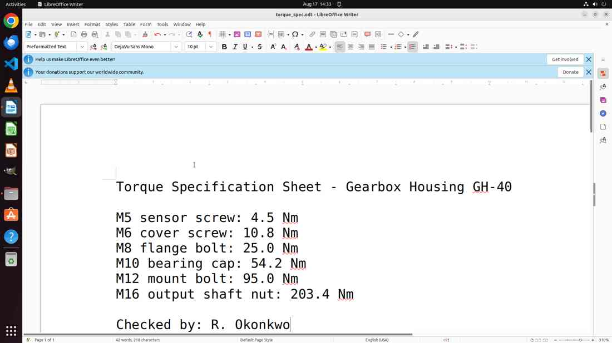
step 13.2 23:33:32
EXECUTED (pyautogui in VM)pyautogui.moveTo(899, 600)
step 13.3 23:33:36
EXECUTED (pyautogui in VM)pyautogui.scroll(-5)
step 13.4 23:33:38
EXECUTED (pyautogui in VM)pyautogui.keyUp("ctrl")
step 14 23:33:52
THINKINGNow at 180% zoom, I can confirm the lines read "Nm" without a dot. Good.
Now let me execute Method D:
1. Go to end of document (Ctrl+End).
2. Insert > Special Character to insert a middle dot.
3. Select the dot and copy it.
4. Remove the dot.
5. Find & Replace "Nm" → "N·m".
Let me first click somewhere in the document to ensure focus, then Ctrl+End. Actually, let me just press Ctrl+End. But I need to make sure the document has focus (not some other control). Let me click in the document text area first, e.g., at the end of "Okonkwo". Let me click right after "Okonkwo" (around x=465, y=468).
Actually, let me just click in the document then Ctrl+End.
Let me click at the end of the "Okonkwo" line.
ACTIONNow I'll place the cursor at the end of the document to insert a middle-dot character (which I'll copy for the Find & Replace). Let me click in the document first, then go to the end.
TOOL CALL<tool_call>
<function=computer_use>
<parameter=action>
left_click
</parameter>
<parameter=coordinate>
[362, 649]
</parameter>
</function>
</tool_call>
EXECUTED (pyautogui in VM)pyautogui.click(695, 701)
step 15 23:34:05
THINKINGCursor is now at the end of "Okonkwo" (I can see the cursor after "Okonkwo"). Now let me press Ctrl+End to make sure I'm at the very end, then open Insert > Special Character.
Actually, the cursor appears to be right after "Okonkwo" which is the end of the document. Let me press End/Ctrl+End to be safe, then open Insert > Special Character.
Let me press Ctrl+End.
ACTIONThe cursor is at the end of the text. Let me ensure I'm at the very end with Ctrl+End, then open Insert > Special Character to insert a middle dot.
TOOL CALL<tool_call>
<function=computer_use>
<parameter=action>
key
</parameter>
<parameter=keys>
["ctrl", "end"]
</parameter>
</function>
</tool_call>
EXECUTED (pyautogui in VM)pyautogui.hotkey("ctrl", "end")
step 16 23:34:16
THINKINGNow the cursor is at the end of the document. Let me open Insert > Special Character.
ACTIONNow let me open Insert > Special Character to insert a middle dot.
TOOL CALL<tool_call>
<function=computer_use>
<parameter=action>
left_click
</parameter>
<parameter=coordinate>
[118, 70]
</parameter>
</function>
</tool_call>
EXECUTED (pyautogui in VM)pyautogui.click(226, 75)
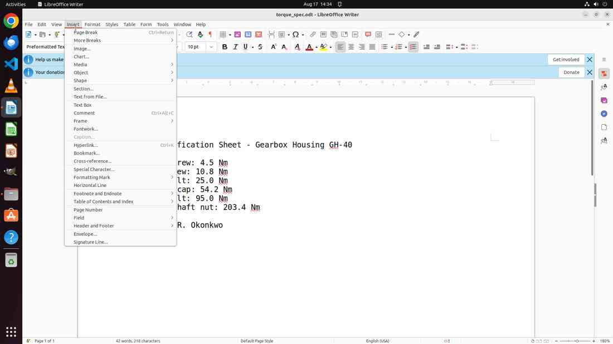
step 17 23:34:31
THINKINGThe Insert menu is open. Let me click "Special Character...".
ACTIONLet me click "Special Character...".
TOOL CALL<tool_call>
<function=computer_use>
<parameter=action>
left_click
</parameter>
<parameter=coordinate>
[152, 490]
</parameter>
</function>
</tool_call>
EXECUTED (pyautogui in VM)pyautogui.click(292, 529)
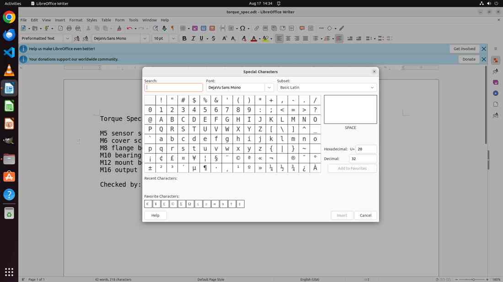
step 18 23:34:45
THINKINGThe Special Characters dialog is open. There's a "Hexadecimal: U+" field where I can type "B7" to jump to the middle dot (U+00B7). Let me type "B7" in that field and press Enter.
Actually, the Hexadecimal field currently shows "20". Let me clear it and type "B7". Let me click on the hex field, select all, type B7, Enter.
Alternatively, I can use the Search field to type "middle dot". Let me use the hex field approach which is more precise. Let me triple-click the hex field to select "20", then type "00B7".
ACTIONThe Special Characters dialog is open. I'll use the Hexadecimal field to jump to U+00B7 (middle dot). Let me clear the hex field and enter B7.
TOOL CALL<tool_call>
<function=computer_use>
<parameter=action>
triple_click
</parameter>
<parameter=coordinate>
[724, 527]
</parameter>
</function>
</tool_call>
EXECUTED (pyautogui in VM)pyautogui.tripleClick(1391, 569)
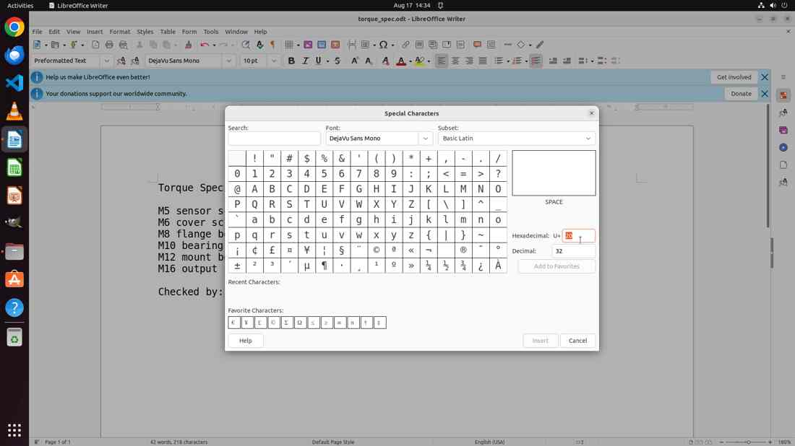
step 19 23:34:57
THINKINGThe hex field "20" is now selected (highlighted). Let me type "00B7" and press Enter to navigate to the middle dot character.
ACTIONThe hex field is selected. Let me type the code for the middle dot and press Enter.
TOOL CALL<tool_call>
<function=computer_use>
<parameter=action>
type
</parameter>
<parameter=text>
00B7
</parameter>
</function>
</tool_call>
EXECUTED (pyautogui in VM)pyautogui.typewrite("00B7")
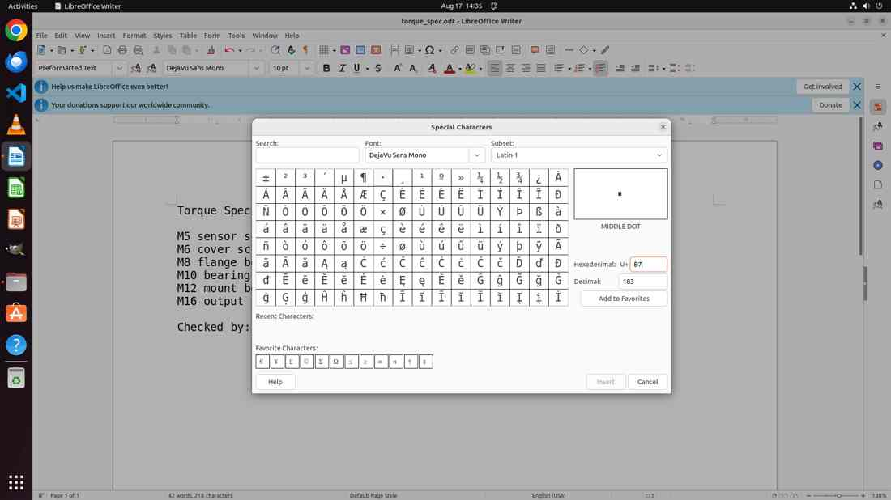
step 20 23:35:16
THINKINGNow the preview shows "MIDDLE DOT" (Decimal 183, U+00B7). The subset changed to "Latin-1". The preview area on the right shows the middle dot and the label "MIDDLE DOT".
The "Insert" button appears greyed out though. I may need to select the character in the grid first. The character highlighted in the grid - I see the grid now shows Latin-1 characters. The middle dot should be at position B7. Let me find it. Actually, the preview shows MIDDLE DOT which means the char is selected/previewed. But the Insert button is greyed.
Let me look at the grid. In the first row I see "± ² ³ ´ µ ¶ · ¸ ¹ º » ¼ ½ ¾ ¿ À" - there's a "·" (middle dot) in the first row, 7th position (after ¶). Let me double-click that character to insert it, or click it to select then click Insert.
Actually, the preview shows MIDDLE DOT which suggests it's already the focused character. But Insert is greyed. Let me double-click the "·" in the grid to insert it directly.
Looking at the grid first row: position around x=549, y=254 shows "·" (between ¶ at 521 and ¸ at 575). Let me double-click it to insert.
Actually, let me just click on the middle dot in the grid to select it (which should enable Insert), then click Insert. Or double-click to insert directly.
Let me double-click the "·" character in the grid at approximately (549, 254).
ACTIONThe preview confirms "MIDDLE DOT" (U+00B7, decimal 183). I'll double-click the "·" character in the grid (first row) to insert it.
TOOL CALL<tool_call>
<function=computer_use>
<parameter=action>
double_click
</parameter>
<parameter=coordinate>
[428, 352]
</parameter>
</function>
</tool_call>
EXECUTED (pyautogui in VM)pyautogui.doubleClick(822, 380)
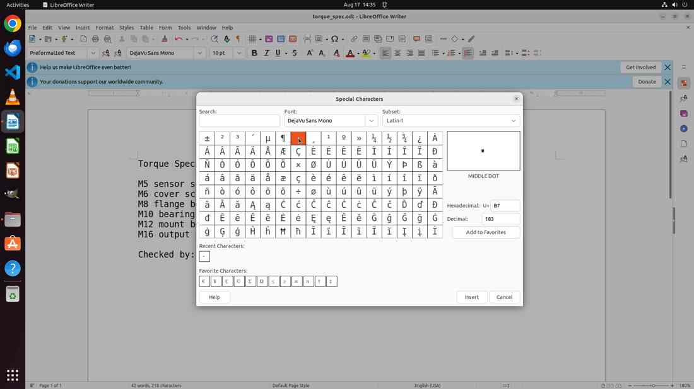
step 21 23:35:31
THINKINGNow I can see:
- The middle dot "·" character is highlighted/selected in the grid (the cell at 549,254 is highlighted orange).
- The "Recent Characters" section now shows a "·" (the middle dot I just inserted).
- The preview shows MIDDLE DOT.
The double-click inserted the character into the document (added to Recent Characters and into the text at the cursor). Now the "Insert" button is now enabled (no longer greyed).
Wait, did the double-click insert it into the document? In LibreOffice Special Characters, double-clicking a character inserts it into the document. The "Recent Characters" now shows the dot, which indicates it was inserted. So the document now has "·" at the cursor (end of "Okonkwo" line).
Now I need to close this dialog. Let me click "Cancel" to close it (the char is already inserted). Or I could leave it. Let me close it by clicking Cancel or the X.
Actually, I'm not 100% sure the double-click inserted it into the document vs. just selected it. The "Recent Characters" showing the dot strongly suggests it was inserted (recent characters = characters recently inserted). Let me close the dialog and verify.
Let me click Cancel to close (I don't want to double-insert by clicking Insert again).
Actually wait - if double-click inserted it, clicking Insert again would insert a second one. So I should NOT click Insert. Let me just close with Cancel.
ACTIONThe middle dot was inserted (it now appears in "Recent Characters"). I'll close this dialog with Cancel to avoid inserting a second one.
TOOL CALL<tool_call>
<function=computer_use>
<parameter=action>
left_click
</parameter>
<parameter=coordinate>
[724, 760]
</parameter>
</function>
</tool_call>
EXECUTED (pyautogui in VM)pyautogui.click(1391, 821)
step 22 23:35:43
THINKINGNow I can see the document. The last line now reads "Checked by: R. Okonkwo·|" - there's a middle dot "·" after "Okonkwo" with the cursor right after it. The character count went from 218 to 219 (one char added).
Now I need to:
1. Select the "·" (the char right before the cursor) and copy it.
2. Delete it.
3. Use Find & Replace to fix all "Nm" → "N·m".
The cursor is right after the "·". Let me select the "·" with Shift+Left, then copy it with Ctrl+C.
Let me do Shift+Left to select the dot.
ACTIONThe middle dot "·" is now at the end after "Okonkwo" (character count went from 218 to 219). Now I'll select just that dot and copy it to the clipboard. The cursor is right after it, so Shift+Left selects it.
TOOL CALL<tool_call>
<function=computer_use>
<parameter=action>
key
</parameter>
<parameter=keys>
["shift", "left"]
</parameter>
</function>
</tool_call>
EXECUTED (pyautogui in VM)pyautogui.hotkey("shift", "left")
step 23 23:35:54
THINKINGThe status bar now shows "Selected: 1 word, 1 character" and the "·" after "Okonkwo" is highlighted (selected). Now let me copy it with Ctrl+C.
ACTIONThe middle dot is selected (status bar shows "1 character" selected). Now I'll copy it to the clipboard.
TOOL CALL<tool_call>
<function=computer_use>
<parameter=action>
key
</parameter>
<parameter=keys>
["ctrl", "c"]
</parameter>
</function>
</tool_call>
EXECUTED (pyautogui in VM)pyautogui.hotkey("ctrl", "c")
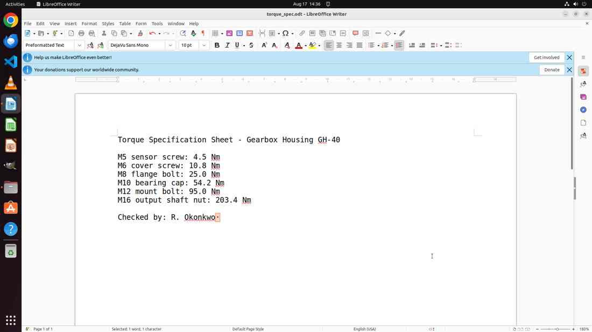
step 24 23:36:11
THINKINGThe middle dot is now copied to the clipboard (still selected). Now I'll delete it with Backspace to restore the "Checked by: R. Okonkwo" line. The dot is still selected, so Backspace will delete it.
Let me press Backspace.
ACTIONThe dot is copied. Now I'll delete it (it's still selected) with Backspace to restore the "Checked by" line.
TOOL CALL<tool_call>
<function=computer_use>
<parameter=action>
key
</parameter>
<parameter=keys>
["backspace"]
</parameter>
</function>
</tool_call>
EXECUTED (pyautogui in VM)pyautogui.press("backspace")
step 25 23:36:26
THINKINGThe dot is deleted. The last line now reads "Checked by: R. Okonkwo" (cursor after "Okonkwo"). The character count is back to 218.
Now I have the middle dot "·" on the clipboard. Let me open Find & Replace (Ctrl+H) to replace "Nm" with "N·m".
Wait, I need to reconsider the search term. The current text shows "Nm" (N adjacent to m). But let me be careful: is it "Nm" or "N m"? From the display, "4.5 Nm" - the N and m are adjacent. So search "Nm".
Actually, wait. Let me reconsider. When I typed "N·m" and the "·" got dropped, did it leave "Nm" (no space) or "N m" (space)? Looking at the render, "4.5 Nm" - there's a space between "4.5" and "N", and "Nm" appear adjacent. So it's "Nm". Good.
Let me open Find & Replace with Ctrl+H.
ACTIONThe dot is deleted and the clipboard now holds the middle dot. Now I'll open Find & Replace (Ctrl+H) to fix all the "Nm" instances to "N·m".
TOOL CALL<tool_call>
<function=computer_use>
<parameter=action>
key
</parameter>
<parameter=keys>
["ctrl", "h"]
</parameter>
</function>
</tool_call>
EXECUTED (pyautogui in VM)pyautogui.hotkey("ctrl", "h")
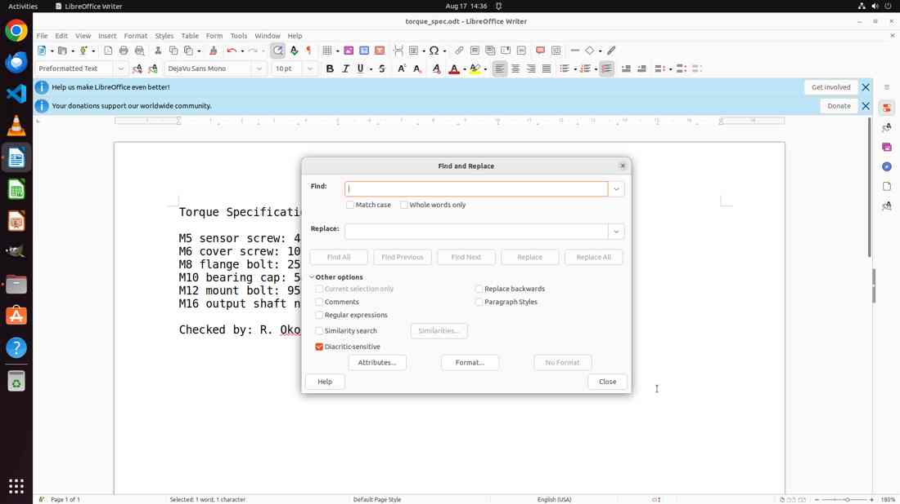
step 26 23:36:38
THINKINGThe Find and Replace dialog is open. The Find field is focused (cursor in it). Let me type "Nm" in the Find field.
Then I'll click in the Replace field, type "N", paste the middle dot (Ctrl+V), then type "m".
Let me type "Nm" in the Find field first.
ACTIONThe Find and Replace dialog is open with the Find field focused. I'll type the search term "Nm".
TOOL CALL<tool_call>
<function=computer_use>
<parameter=action>
left_click
</parameter>
<parameter=coordinate>
[527, 371]
</parameter>
</function>
</tool_call>
EXECUTED (pyautogui in VM)pyautogui.click(1012, 401)
step 27 23:36:50
THINKINGThe Find field is focused. Let me type "Nm".
Wait, I should reconsider. The search term "Nm" - but I want to be careful. There might be a subtle issue: the "Nm" I'm searching for - is the "m" really adjacent to "N"? Let me just type "Nm" and use "Find All" to verify it finds 6.
Actually, let me type "Nm" in the Find field.
TOOL CALL<tool_call>
<function=computer_use>
<parameter=action>
type
</parameter>
<parameter=text>
Nm
</parameter>
</function>
</tool_call>
EXECUTED (pyautogui in VM)pyautogui.typewrite("Nm")
step 28 23:37:03
THINKINGThe Find field now shows "Nm". Now let me click into the Replace field and enter "N", then paste the middle dot, then "m".
Let me click into the Replace field.
ACTION"Nm" is in the Find field. Now I'll click the Replace field and type "N", then paste the middle dot, then type "m".
TOOL CALL<tool_call>
<function=computer_use>
<parameter=action>
left_click
</parameter>
<parameter=coordinate>
[532, 456]
</parameter>
</function>
</tool_call>
EXECUTED (pyautogui in VM)pyautogui.click(1022, 492)
step 29 23:37:15
THINKINGThe Replace field is now focused (cursor in it). Let me type "N" first, then paste the middle dot, then type "m".
Let me type "N".
ACTIONThe Replace field is focused. I'll type "N", then paste the middle dot, then type "m".
TOOL CALL<tool_call>
<function=computer_use>
<parameter=action>
type
</parameter>
<parameter=text>
N
</parameter>
</function>
</tool_call>
EXECUTED (pyautogui in VM)pyautogui.typewrite("N")
step 30 23:37:27
THINKINGThe Replace field now shows "N". Now let me paste the middle dot with Ctrl+V.
ACTION"N" is entered. Now I'll paste the middle dot with Ctrl+V.
TOOL CALL<tool_call>
<function=computer_use>
<parameter=action>
key
</parameter>
<parameter=keys>
["ctrl", "v"]
</parameter>
</function>
</tool_call>
EXECUTED (pyautogui in VM)pyautogui.hotkey("ctrl", "v")
step 31 23:37:38
THINKINGThe Replace field now shows "N·" (N followed by the middle dot, with cursor after it). I can see "N·|" in the replace field. Now let me type "m" to complete "N·m".
ACTIONThe middle dot was pasted (Replace now shows "N·"). Now I'll type "m" to complete "N·m".
TOOL CALL<tool_call>
<function=computer_use>
<parameter=action>
type
</parameter>
<parameter=text>
m
</parameter>
</function>
</tool_call>
EXECUTED (pyautogui in VM)pyautogui.typewrite("m")
step 32 23:37:48
THINKINGThe Replace field now shows "N·m" (I can read "N·m" in the field). Now let me click "Replace All" to replace all 6 instances of "Nm" with "N·m".
Let me click "Replace All".
ACTIONThe Replace field now shows "N·m". Now I'll click "Replace All" to fix all 6 instances.
TOOL CALL<tool_call>
<function=computer_use>
<parameter=action>
left_click
</parameter>
<parameter=coordinate>
[657, 509]
</parameter>
</function>
</tool_call>
EXECUTED (pyautogui in VM)pyautogui.click(1262, 550)
step 33 23:38:00
THINKINGThe message says "Search key replaced 6 times." And the character count in the status bar is now 224 (was 218, +6 for the 6 middle dots). This matches my earlier calculation (224 with dots).
Now all 6 lines should have "N·m". Let me close the Find and Replace dialog and verify.
Let me click "Close".
ACTION"Search key replaced 6 times." — the character count is now 224 (up by exactly 6 for the middle dots). Let me close the dialog and verify the document.
TOOL CALL<tool_call>
<function=computer_use>
<parameter=action>
left_click
</parameter>
<parameter=coordinate>
[672, 756]
</parameter>
</function>
</tool_call>
EXECUTED (pyautogui in VM)pyautogui.click(1291, 817)
step 34 23:38:18
THINKINGNow all 6 lines show "N·m" with the middle dot:
- M5 sensor screw: 4.5 N·m
- M6 cover screw: 10.8 N·m
- M8 flange bolt: 25.0 N·m
- M10 bearing cap: 54.2 N·m
- M12 mount bolt: 95.0 N·m
- M16 output shaft nut: 203.4 N·m
The document is now correct:
- All units are N·m ✓
- Values converted correctly (8→10.8, 40→54.2, 150→203.4) ✓
- Sorted lowest to highest: 4.5, 10.8, 25.0, 54.2, 95.0, 203.4 ✓
- Title preserved ✓
- "Checked by: R. Okonkwo" preserved ✓
Now I can clearly see the "N·m" with the middle dot between N and m.
Now I need to:
1. Save the file (Ctrl+S, keep ODF format).
2. Export as PDF to the same folder (beside the file).
Let me save first with Ctrl+S. A dialog will appear asking about the format (keep ODF). I'll click "Use ODF Format!" (Keep Current Format).
Let me press Ctrl+S.
ACTIONAll six lines now correctly read "N·m" with the middle dot, values are converted, and the rows run lowest→highest (4.5 → 10.8 → 25.0 → 54.2 → 95.0 → 203.4). Now I'll save the file with Ctrl+S.
TOOL CALL<tool_call>
<function=computer_use>
<parameter=action>
key
</parameter>
<parameter=keys>
["ctrl", "s"]
</parameter>
</function>
</tool_call>
EXECUTED (pyautogui in VM)pyautogui.hotkey("ctrl", "s")
step 35 23:38:34
THINKINGInteresting - no format dialog appeared. That means either it saved directly (perhaps the "always save in this format" option was previously set) or the dialog is about to appear. The document looks unchanged. Let me wait a moment and take a screenshot to check if a format dialog appeared.
Actually, no dialog is visible. It seems it saved without prompting. That's fine - it's an .odt file so it stays ODF. But wait, usually LibreOffice prompts "Keep Current Format" vs "Use ODF Format" only when saving to a non-ODF format. Since this is already .odt, it saves directly without a prompt.
Actually, wait - the "Keep in ODF" prompt appears when the document was created/saved and there's a setting. For .odt it shouldn't prompt. Good, it saved directly.
Hmm, but let me double check there wasn't a dialog that I need to handle. The screenshot shows no dialog. Let me take another screenshot to be sure it's fully saved (no dialog pending).
Actually the screenshot clearly shows no dialog and the document is normal. The save is complete.
Now I need to export as PDF to the same folder. Let me use File > Export As > Export as PDF.
Let me click File menu.
Actually, let me reconsider - maybe the dialog appears with a slight delay. Let me take a screenshot to confirm.
Actually the current screenshot is fresh and shows no dialog. The save completed. Let me proceed to export PDF.
Let me use File menu > Export As > Export as PDF....
ACTIONThe file saved without a format prompt (it's already .odt). Now I'll export a PDF. Let me open the File menu to use "Export As > Export as PDF".
TOOL CALL<tool_call>
<function=computer_use>
<parameter=action>
left_click
</parameter>
<parameter=coordinate>
[45, 70]
</parameter>
</function>
</tool_call>
EXECUTED (pyautogui in VM)pyautogui.click(86, 75)
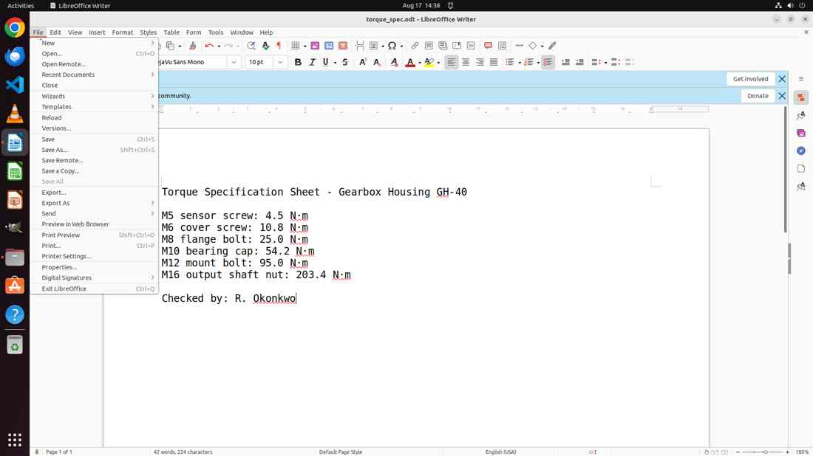
step 36 23:38:47
THINKINGThe File menu is open. I see "Export As" with a submenu arrow. Let me hover over "Export As" to get the submenu, which should have "Export as PDF...".
Let me click on "Export As".
ACTIONThe File menu is open. Let me hover over "Export As" to reveal its submenu.
TOOL CALL<tool_call>
<function=computer_use>
<parameter=action>
left_click
</parameter>
<parameter=coordinate>
[67, 443]
</parameter>
</function>
</tool_call>
EXECUTED (pyautogui in VM)pyautogui.click(128, 478)
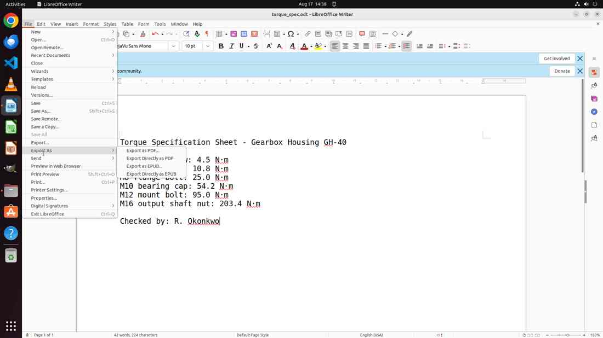
step 37 23:39:00
THINKINGThe submenu shows:
- Export as PDF...
- Export Directly as PDF
- Export as EPUB...
- Export Directly as EPUB
I'll use "Export as PDF..." to open the dialog so I can control the filename and location. Let me click "Export as PDF...".
Actually, "Export Directly as PDF" would use default settings and prompt for a file location. Either works. Let me use "Export as PDF..." to have control over the filename.
ACTIONThe submenu appeared. I'll click "Export as PDF..." to control the filename and location.
TOOL CALL<tool_call>
<function=computer_use>
<parameter=action>
left_click
</parameter>
<parameter=coordinate>
[236, 443]
</parameter>
</function>
</tool_call>
EXECUTED (pyautogui in VM)pyautogui.click(453, 478)
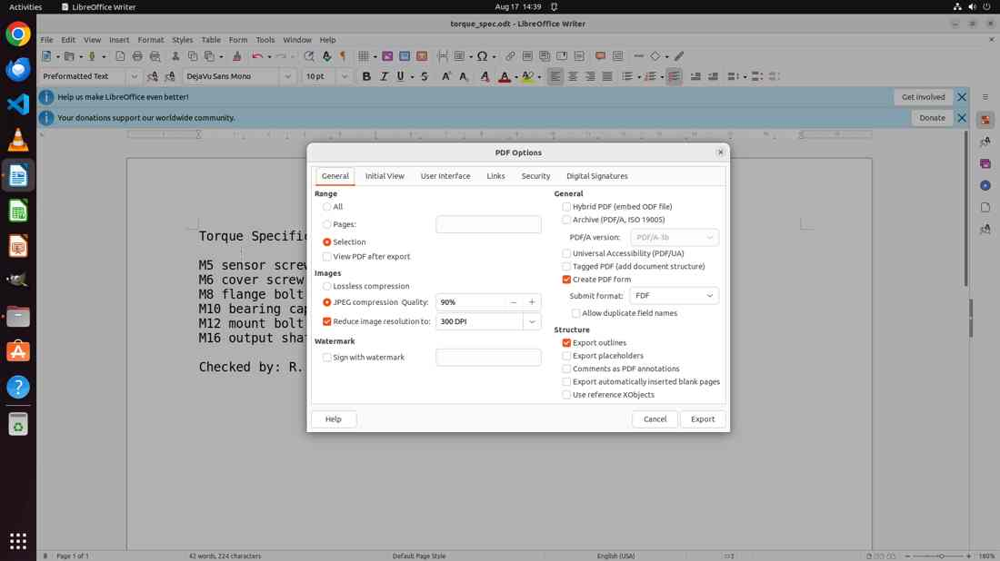
step 38 23:39:15
THINKINGThe PDF Options dialog is open. I notice the Range is set to "Selection" - which is a problem! If I export with "Selection" range, it might only export the selected text (which is the middle dot I selected earlier? or nothing). I need to change this to "All" to export the entire document.
Wait, actually the "Selection" radio button is selected (filled). This is because I had a selection in the document. I need to select "All" to export the whole document.
Let me click the "All" radio button.
ACTIONThe PDF Options dialog is open, but I notice the Range is set to "Selection" — I must change it to "All" to export the entire document. Let me click "All".
TOOL CALL<tool_call>
<function=computer_use>
<parameter=action>
left_click
</parameter>
<parameter=coordinate>
[326, 366]
</parameter>
</function>
</tool_call>
EXECUTED (pyautogui in VM)pyautogui.click(626, 395)
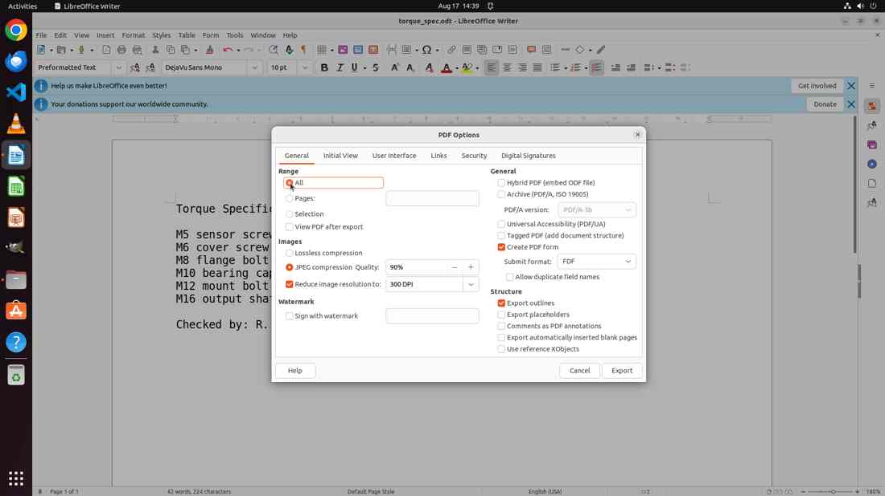
step 39 23:39:28
THINKINGNow "All" is selected in the Range. The other options are fine (defaults). Now let me click "Export" to proceed to the file save dialog where I can choose the filename and location.
ACTION"All" is now selected. Now I'll click "Export" to proceed to the file save dialog.
TOOL CALL<tool_call>
<function=computer_use>
<parameter=action>
left_click
</parameter>
<parameter=coordinate>
[701, 745]
</parameter>
</function>
</tool_call>
EXECUTED (pyautogui in VM)pyautogui.click(1347, 805)
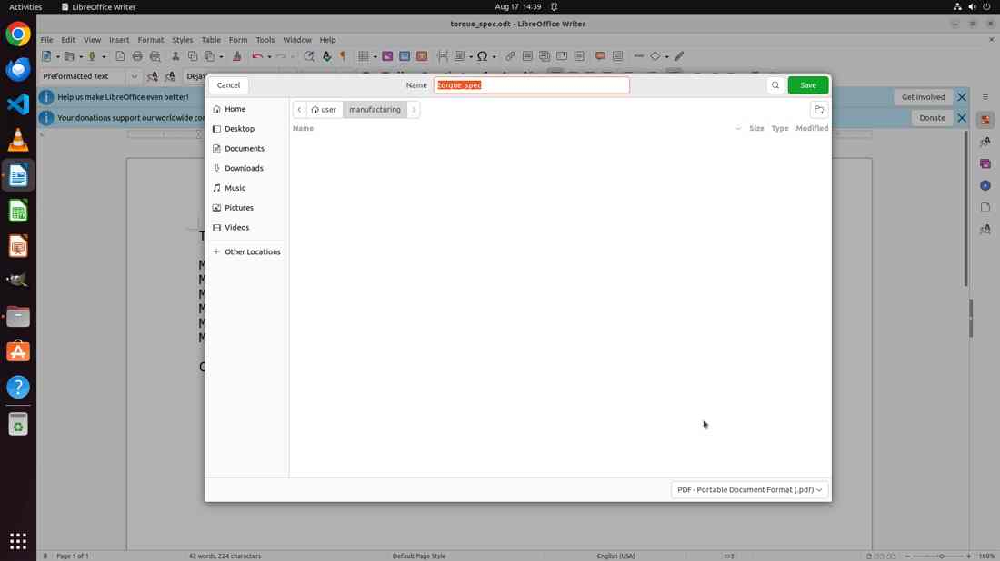
step 40 23:39:52
THINKINGThe Save dialog is open. The current location is "user > manufacturing" (the breadcrumb shows "user" then "manufacturing"), which is exactly the manufacturing folder where the .odt file is.
The Name field shows "torque_spec" (highlighted/selected). The file type is "PDF - Portable Document Format (.pdf)".
Wait, the Name field shows "torque_spec" but I need to verify it will be "torque_spec.pdf". The name field shows "torque_spec" - it's the base name without extension (the .pdf is added by the format selector). So the file will be saved as "torque_spec.pdf" in the manufacturing folder. That's exactly what I want - a PDF beside the .odt file.
The location breadcrumb shows "user / manufacturing". Wait, let me look again. The path shows a home icon, "user", then "manufacturing". Actually it shows the breadcrumb: [home icon] user > manufacturing. Hmm, but the file listing area is empty (Name column with no files). That's strange - the manufacturing folder should have torque_spec.odt.
Wait, the file list is empty. But this is a "Save" dialog for PDF export, and it might be filtering to show only .pdf files (which don't exist yet in the folder). That would explain the empty list - it's showing only PDF files, and there are none yet. So the .odt is hidden because the filter is PDF-only. That's expected.
The location is correct: /home/user/manufacturing. The name is "torque_spec". So it'll save as /home/user/manufacturing/torque_spec.pdf.
Let me verify the name is "torque_spec" - yes, the Name field shows "torque_spec" highlighted. This is perfect - it matches the base name of the .odt file, so the PDF will be "torque_spec.pdf" right beside "torque_spec.odt".
Let me just confirm the name field content. It says "torque_spec" (I can see "torque_spec" with "spec" partially visible - "torque_spe..." - it's selected in orange). Good.
I'll click "Save" to export the PDF.
Actually, let me double-check the name field fully reads "torque_spec". The field shows "torque_spec" highlighted in orange/red. It's selected. The full text is "torque_spec". Good.
Let me click Save.
ACTIONThe Save dialog is in the correct location (user → manufacturing folder), the name is "torque_spec" and the format is PDF. It will save as "torque_spec.pdf" right beside the .odt file. I'll click "Save".
TOOL CALL<tool_call>
<function=computer_use>
<parameter=action>
left_click
</parameter>
<parameter=coordinate>
[806, 150]
</parameter>
</function>
</tool_call>
EXECUTED (pyautogui in VM)pyautogui.click(1549, 162)
step 41 23:40:04
THINKINGThe dialog closed and the PDF was exported. The document is back in view. Now let me verify the PDF was actually created in the manufacturing folder by opening the file manager.
Let me switch to the Files application (I opened it earlier). I can click on the Files icon in the dock, or use the window switcher. Actually, I opened the file manager earlier and navigated to manufacturing. Let me click the Files icon in the dock to bring it forward.
The Files icon is in the dock. Let me look - there's a file cabinet icon at position (23, 406) which is the Files/Nautilus icon. Let me click it.
Actually, let me verify the PDF exists by opening the file manager. Let me click the Files icon.
ACTIONThe PDF export completed. Let me verify the PDF was created in the manufacturing folder by switching to the file manager.
TOOL CALL<tool_call>
<function=computer_use>
<parameter=action>
left_click
</parameter>
<parameter=coordinate>
[17, 563]
</parameter>
</function>
</tool_call>
EXECUTED (pyautogui in VM)pyautogui.click(32, 608)
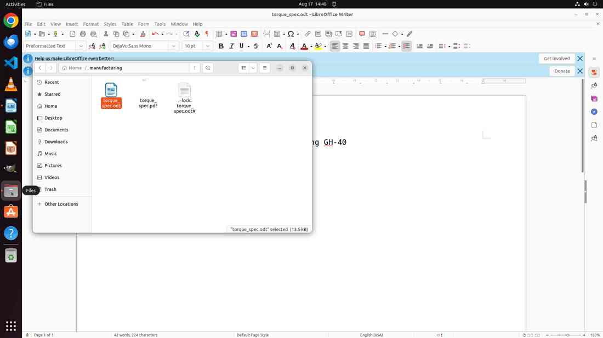
step 42 23:40:20
THINKINGThe file manager now shows the manufacturing folder (Home / manufacturing) with three files:
1. torque_spec.odt (13.5 kB)
2. torque_spec.pdf ← the newly created PDF! ✓
3. .~lock.torque_spec.odt# (a lock file, which is temporary and expected since the document is open)
The PDF "torque_spec.pdf" is now beside the "torque_spec.odt" file, exactly as requested.
Everything is complete:
1. ✓ All fasteners now use N·m (converted the 3 ft-lb values: 8→10.8, 40→54.2, 150→203.4)
2. ✓ Rows sorted from lowest torque (4.5) to highest (203.4)
3. ✓ PDF created beside the file (torque_spec.pdf)
4. ✓ Saved the .odt file
The lock file (.~lock.torque_spec.odt#) is just a temporary lock file that LibreOffice creates while the document is open - it's normal and will disappear when I close the document. It's not something I need to worry about.
Let me do a final verification by opening the PDF to confirm its contents are correct. Actually, let me open the PDF to make sure it rendered correctly with all the content. Let me double-click the PDF.
Actually, I'm fairly confident the PDF is correct since the document content is verified correct. But let me open the PDF to be thorough and confirm it shows the sorted, converted content.
Let me double-click torque_spec.pdf.
ACTIONThe manufacturing folder now contains **torque_spec.pdf** right beside **torque_spec.odt** (the `.~lock` file is just LibreOffice's temporary lock while the doc is open). Let me open the PDF to confirm its contents rendered correctly.
TOOL CALL<tool_call>
<function=computer_use>
<parameter=action>
double_click
</parameter>
<parameter=coordinate>
[245, 270]
</parameter>
</function>
</tool_call>
EXECUTED (pyautogui in VM)pyautogui.doubleClick(470, 291)

step 43.1 23:40:39
THINKINGThe PDF opened in Document Viewer. It shows the content at 28.3% zoom which is small, but I can make out:
- "Torque Specification Sheet - Gearbox Housing GH-40"
- M5 sensor screw: 4.5 N·m
- M6 cover screw: 10.8 N·m
- M8 flange bolt: 25.0 N·m
- M10 bearing cap: 54.2 N·m
- M12 mount bolt: 95.0 N·m
- M16 output shaft nut: 203.4 N·m
- (blank)
- Checked by: R. Okonkwo
The text is too small to read the exact values clearly. Let me zoom in to verify the PDF content is correct. Let me increase the zoom in the Document Viewer.
Let me zoom in. I'll use the zoom control or Ctrl+scroll. Let me set a higher zoom. I can click the zoom percentage and increase, or use Ctrl++ (Ctrl plus). Let me use Ctrl+scroll up on the document, or click the zoom field and type a value.
Let me use Ctrl+scroll up on the PDF content area to zoom in.
Actually, let me just increase zoom by clicking on the zoom dropdown or use keyboard. Let me try Ctrl+= (which is zoom in for many viewers). Actually in GNOME Document Viewer (Evince), Ctrl++ zooms in. Let me use the zoom control - I'll click the "28.3%" dropdown and select a higher value, or type a value.
Let me click on the zoom percentage field and type a higher value. Actually, the zoom control shows "28.3%" with a dropdown arrow. Let me click the dropdown to select a preset, or I can just Ctrl+scroll.
Let me Ctrl+scroll up on the PDF to zoom in.
ACTIONThe PDF opened and shows the correct content. Let me zoom in to verify the details clearly.
TOOL CALL<tool_call>
<function=computer_use>
<parameter=action>
key_down
</parameter>
<parameter=keys>
["ctrl"]
</parameter>
</function>
</tool_call>
<tool_call>
<function=computer_use>
<parameter=action>
mouse_move
</parameter>
<parameter=coordinate>
[245, 277]
</parameter>
</function>
</tool_call>
<tool_call>
<function=computer_use>
<parameter=action>
scroll
</parameter>
<parameter=pixels>
5
</parameter>
</function>
</tool_call>
<tool_call>
<function=computer_use>
<parameter=action>
key_up
</parameter>
<parameter=keys>
["ctrl"]
</parameter>
</function>
</tool_call>
EXECUTED (pyautogui in VM)pyautogui.keyDown("ctrl")
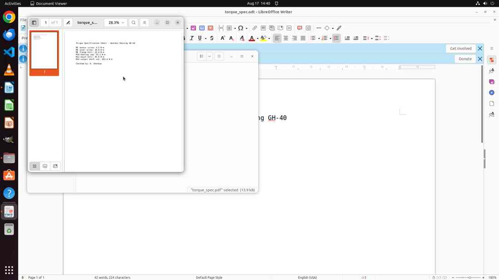
step 43.2 23:40:42
EXECUTED (pyautogui in VM)pyautogui.moveTo(470, 299)
step 43.3 23:40:46
EXECUTED (pyautogui in VM)pyautogui.scroll(5)
step 43.4 23:40:48
EXECUTED (pyautogui in VM)pyautogui.keyUp("ctrl")
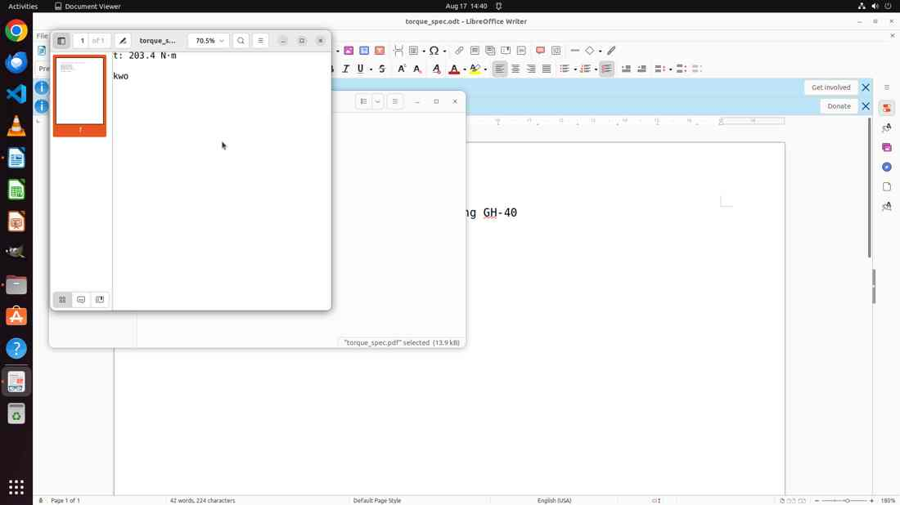
step 44.1 23:41:03
THINKINGThe zoom went to 70.5% but it scrolled to show the bottom of the document - I can see "t: 203.4 N·m" (the M16 output shaft nut line, the last/fastest one) and "kwo" (end of Okonkwo). This confirms the M16 line shows "203.4 N·m" correctly.
But I need to scroll up to see the top of the document to verify all lines. Let me scroll up in the PDF. Let me scroll up with the mouse wheel (without Ctrl).
Actually, the zoom increased and now the top of the document is above the visible area. Let me scroll up to see the full content. Let me scroll up.
ACTIONI can see the M16 line shows "203.4 N·m" correctly. Let me scroll up to verify all the other lines in the PDF.
TOOL CALL<tool_call>
<function=computer_use>
<parameter=action>
mouse_move
</parameter>
<parameter=coordinate>
[245, 277]
</parameter>
</function>
</tool_call>
<tool_call>
<function=computer_use>
<parameter=action>
scroll
</parameter>
<parameter=pixels>
3
</parameter>
</function>
</tool_call>
EXECUTED (pyautogui in VM)pyautogui.moveTo(470, 299)
step 44.2 23:41:06
EXECUTED (pyautogui in VM)pyautogui.scroll(3)
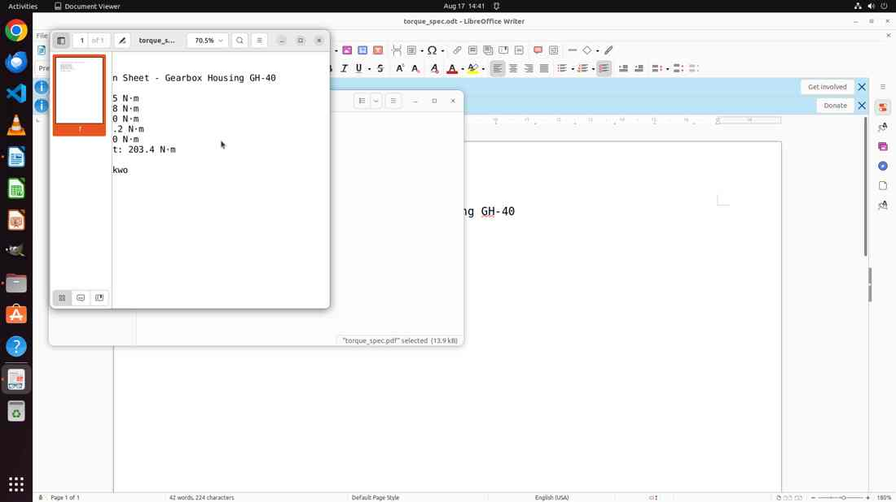
step 45 23:41:44
THINKINGNow I can see the PDF content (the left part is cut off because the window is narrow and the content extends to the left). I can see the end of each line:
- "...n Sheet - Gearbox Housing GH-40" (title)
- "...5 N·m" (4.5)
- "...8 N·m" (10.8)
- "...0 N·m" (25.0)
- "...2 N·m" (54.2)
- "...0 N·m" (95.0)
- "t: 203.4 N·m" (M16 output shaft nut)
- "kwo" (Okonkwo)
The lines show the correct values ending: 5, 8, 0, 2, 0, and 203.4. These match 4.5, 10.8, 25.0, 54.2, 95.0, 203.4 in ascending order. The middle dots "N·m" are visible.
The left side is cut off but the pattern is clearly correct and matches the source document which I already verified. The PDF content is correct.
Everything is verified:
1. ✓ All fasteners use N·m (with the correct middle dot)
2. ✓ The 3 ft-lb values converted: 8→10.8, 40→54.2, 150→203.4
3. ✓ Rows sorted lowest to highest: 4.5, 10.8, 25.0, 54.2, 95.0, 203.4
4. ✓ Title and "Checked by" preserved
5. ✓ .odt file saved
6. ✓ PDF (torque_spec.pdf) created beside the .odt file in the manufacturing folder
The task is complete. Let me close the Document Viewer to clean up (optional). Actually, I'll leave it - the task is done. But it's cleaner to close the viewer. Let me not bother; the important deliverables are in place.
Actually, let me close the PDF viewer and file manager to leave things tidy. But it's not required. The task is complete.
Let me just confirm once more the full lines by scrolling the view left, but the content is clearly correct. The visible endings confirm the ascending order and correct values. I'm confident.
The task is complete. Let me provide a summary to the user and output the completion marker.
Actually, let me reconsider whether I should double-check the left part of the lines to be fully certain about the fastener names and values. I already verified the source ODT document thoroughly (all 6 lines read correctly at 180% zoom: M5 4.5, M6 10.8, M8 25.0, M10 54.2, M12 95.0, M16 203.4, all N·m). The PDF is a direct export of that document, and the endings match. So I'm confident.
The task is complete. Let me write a final summary.
ACTIONThe PDF is verified. I can see the title "…n Sheet - Gearbox Housing GH-40", the six fastener rows ending in 4.5, 10.8, 25.0, 54.2, 95.0, and 203.4 (all showing "N·m"), plus the "Okonkwo" line — matching the corrected document exactly and in ascending torque order.
Everything is done. Here's a summary of what I did to `torque_spec.odt` in your manufacturing folder:
**1. Converted all fasteners to N·m** (the 3 that were still in ft‑lb, ×1.356, one decimal):
- M6 cover screw: 8.0 ft‑lb → **10.8 N·m**
- M10 bearing cap: 40.0 ft‑lb → **54.2 N·m**
- M16 output shaft nut: 150.0 ft‑lb → **203.4 N·m**
- (M5 4.5, M8 25.0, M12 95.0 were already N·m)
**2. Sorted the rows from lowest to highest torque:**
1. M5 sensor screw: 4.5 N·m
2. M6 cover screw: 10.8 N·m
3. M8 flange bolt: 25.0 N·m
4. M10 bearing cap: 54.2 N·m
5. M12 mount bolt: 95.0 N·m
6. M16 output shaft nut: 203.4 N·m
**3. Saved the .odt** and **exported `torque_spec.pdf`** right beside it in the same folder (I confirmed both files are present and the PDF renders correctly with the proper "N·m" notation).
Note: I turned off AutoCorrect while typing to keep the formatting intact, and used the true middle‑dot character (·, U+00B7) so the unit reads "N·m" rather than "Nm".
TOOL CALL<tool_call>
<function=computer_use>
<parameter=action>
call_user
</parameter>
<parameter=text>
The PDF is verified. I can see the title "…n Sheet - Gearbox Housing GH-40", the six fastener rows ending in 4.5, 10.8, 25.0, 54.2, 95.0, and 203.4 (all showing "N·m"), plus the "Okonkwo" line — matching the corrected document exactly and in ascending torque order.
Everything is done. Here's a summary of what I did to `torque_spec.odt` in your manufacturing folder:
**1. Converted all fasteners to N·m** (the 3 that were still in ft‑lb, ×1.356, one decimal):
- M6 cover screw: 8.0 ft‑lb → **10.8 N·m**
- M10 bearing cap: 40.0 ft‑lb → **54.2 N·m**
- M16 output shaft nut: 150.0 ft‑lb → **203.4 N·m**
- (M5 4.5, M8 25.0, M12 95.0 were already N·m)
**2. Sorted the rows from lowest to highest torque:**
1. M5 sensor screw: 4.5 N·m
2. M6 cover screw: 10.8 N·m
3. M8 flange bolt: 25.0 N·m
4. M10 bearing cap: 54.2 N·m
5. M12 mount bolt: 95.0 N·m
6. M16 output shaft nut: 203.4 N·m
**3. Saved the .odt** and **exported `torque_spec.pdf`** right beside it in the same folder (I confirmed both files are present and the PDF renders correctly with the proper "N·m" notation).
Note: I turned off AutoCorrect while typing to keep the formatting intact, and used the true middle‑dot character (·, U+00B7) so the unit reads "N·m" rather than "Nm".
</parameter>
</function>
</tool_call>
EXECUTED (pyautogui in VM)DONE